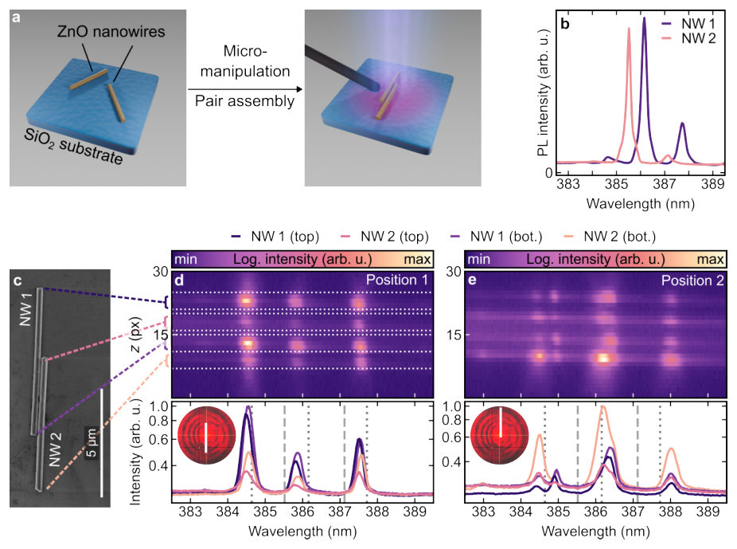
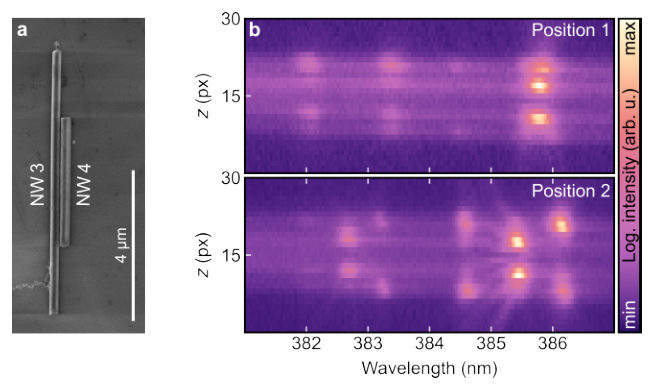
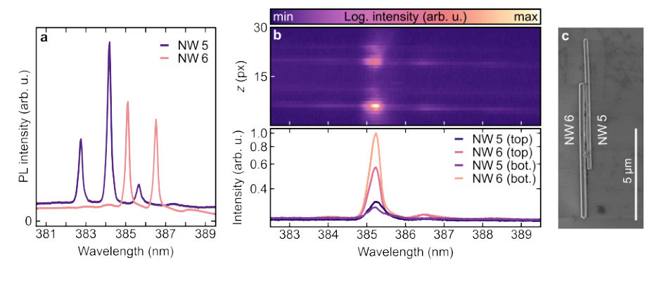

← Index · ← Previous · Next →
Authors: Yanmeng Lei, Rui-Chun Xiao, Weiwei Lin, Tao Yu
Type: theory · Category: other · PDF: https://arxiv.org/pdf/2605.01225v1
Analysis basis: full PDF text, analyzed in chunks
Topic relevance: Keldysh / 2PI / non-Gaussian methods 2/5 · non-equilibrium dynamics 2/5
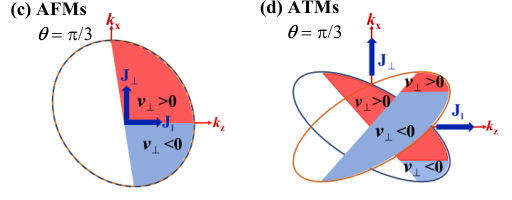
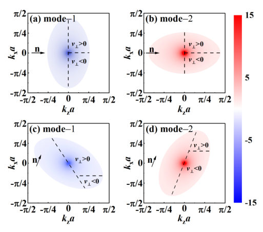
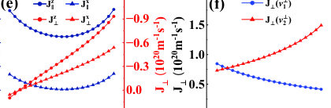
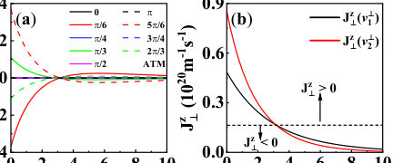
Summary. This paper predicts that altermagnets can support a multidirectional 'vector' magnon spin current when electrically injected. It demonstrates that the transverse component of this current is significantly larger in altermagnets than in antiferromagnets, providing a clear experimental fingerprint to identify altermagnetic materials.
Why it may be interesting. not directly relevant
Main problem. The study aims to identify and manipulate distinctive transport signatures of altermagnets (ATMs) for information processing, specifically focusing on how to experimentally distinguish them from conventional antiferromagnets.
Main result. The authors predict a 'vector' magnon spin current with both longitudinal and sizable transverse components, where the transverse response is enhanced by two orders of magnitude in altermagnets due to broken parity-time symmetry.
Method. The researchers use microscopic quantum kinetic equations to model electrical spin injection, diffusion, and dephasing, combined with a symmetry-based expansion of the response tensor.
Model / system. A heavy-metal/altermagnet (NM/ATM) interface modeled using a minimal square-lattice two-sublattice Hamiltonian including inter-sublattice exchange, anisotropy, and an applied magnetic field.
Key observables. Longitudinal and transverse magnon spin current components, and the transverse-to-longitudinal spin-current ratio.
Important parameters / regimes. Exchange coupling J1 = 1 meV, spin S = 3/2, lattice constant a = 1 nm, and relaxation time tau_m = 1 ns.
Assumptions / limitations. The model assumes a relaxation time tau_m that is equal for both magnon modes and focuses on the diffusion-driven transport regime.
Figures summary. Figure 1 shows a schematic of diffusive magnon transport and a comparison of flow in AFMs vs ATMs; Figure 2 illustrates injected magnon populations in the Brillouin zone; Figure 3 shows the dependence of longitudinal and transverse spin currents on the Neel vector orientation.
Paper structure. The paper introduces the problem of altermagnet transport, describes the microscopic model and quantum kinetic framework, presents the symmetry analysis of the response tensor, details the results regarding vector spin currents and their enhancement, and concludes with the experimental implications for distinguishing altermagnets.
Altermagnets host chirally split magnons that promise unique functionalities for information processing. However, their distinctive transport signatures, crucial for experimental identification and manipulation, remain elusive. Here, we predict that a spin accumulation electrically injects a ``vector" or multidirectional magnon spin current into an altermagnet, comprising both longitudinal and sizable transverse components. Notably, this transverse current exhibits a sign reversal away from the source and can be switched on or off by reorienting the Néel vector. While such a transverse current is found to be not forbidden even in conventional antiferromagnets, we demonstrate through quantum-kinetic calculations that in altermagnets, the transverse response is enhanced by two orders of magnitude due to broken parity-time symmetry. This giant enhancement provides a decisive transport fingerprint for detecting magnon spin splitting and Néel-vector orientation, offering a clear criterion to experimentally distinguish altermagnets from conventional antiferromagnets.
Authors: Sumanta Mukherjee
Type: theory · Category: disordered systems and neural networks · PDF: https://arxiv.org/pdf/2605.02483v1
Analysis basis: full PDF text, analyzed in chunks
Topic relevance: spintronics-quantum-optics interface 2/5 · non-equilibrium dynamics 1/5
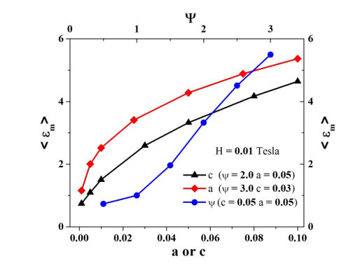
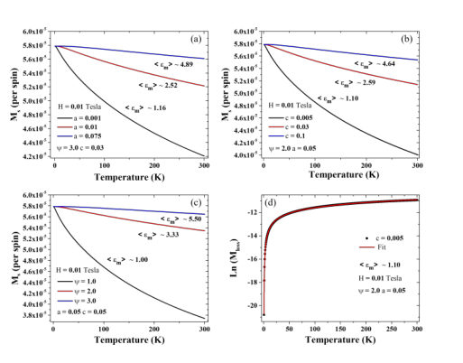
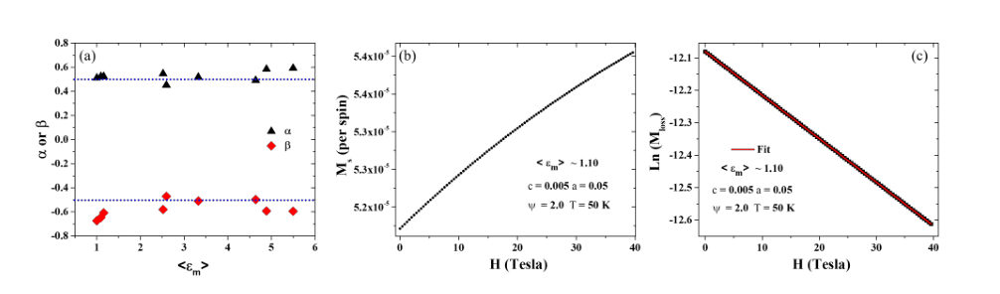
Summary. This paper presents a unified theoretical framework to describe how weak disorder and finite-size effects influence magnetization and spin transport in Heisenberg ferromagnets. It reveals that the resulting spin current follows a temperature dependence similar to the Efros-Shklovskii law found in electronic systems. The findings provide a generalized Bloch equation applicable across different dimensions.
Why it may be interesting. not directly relevant
Main problem. The paper aims to provide a unified description of the loss of saturation magnetization and the behavior of spin transport in weakly disordered spin-1/2 ferromagnets.
Main result. The author derives a unified Bloch equation for magnetization and a spin current expression that is structurally analogous to the Efros-Shklovskii law for electronic conductivity.
Method. The approach combines the probability distribution of segment lengths with the energy gap dependence on length to derive a gap distribution, using a modified Bloch equation approach.
Model / system. The system consists of weakly disordered spin-1/2 Heisenberg ferromagnets in 1D, 2D, or 3D, incorporating finite-size effects and a distribution of energy gaps due to disorder.
Key observables. Saturation magnetization (Ms), magnetization loss (Mloss), and spin current (j).
Important parameters / regimes. Disorder strength (a), gap scaling constant (c), effective dimensionality (psi), temperature (T), and external magnetic field (H).
Assumptions / limitations. Assumes a weak-disorder and weak-magnetic-field regime, and assumes the magnon group velocity is independent of the magnon population.
Figures summary. Figure 1 shows the dependence of the mean gap on disorder and dimensionality parameters; Figure 2 shows the variation of saturation magnetization with respect to disorder, scaling, and dimensionality at different temperatures.
Paper structure. The paper introduces the problem of magnetization loss in disordered systems, develops a mathematical framework for gap distributions, derives a unified Bloch equation, extends the derivation to spin transport, and validates the results through parameter variation analysis.
In this report, a unified description of the loss of saturation magnetization in the presence of a distribution of finite-size effects is provided for weakly disordered spin-1/2 ferromagnets. This description allows us to derive a unified form of the Bloch equation for these systems. We further extend this approach to obtain a unified expression for spin transport in such systems.
Authors: Ann-Kathrin Kollak, Lukas R. Jäger, Hark Hoe Tan, Carsten Ronning
Type: experiment · Category: other · PDF: https://arxiv.org/pdf/2605.02445v1
Analysis basis: full PDF text, analyzed in chunks
Topic relevance: quantum optics experiment 2/5 · interference shaping light 1/5



Summary. The researchers demonstrated that two ZnO nanowire lasers can be dynamically synchronized through frequency locking when placed extremely close together. By controlling where the laser pump hits the wires, they can switch between full, partial, and no locking. This provides a robust way to control light at the nanoscale for future integrated photonic circuits.
Why it may be interesting. not directly relevant
Main problem. Investigating the implementation and control of frequency locking and optical coupling in ZnO nanowire lasers at the nanoscale, specifically distinguishing between dynamic nonlinear interaction and static spectral filtering.
Main result. Demonstrated that closely spaced ZnO nanowire lasers (gap < 10 nm) exhibit dynamic frequency locking, including full and partial locking regimes, which can be actively controlled via spatial excitation distribution.
Method. Micromanipulation of ZnO nanowires into pairs, followed by spatially resolved micro-photoluminescence spectroscopy using an inhomogeneous optical pump spot.
Model / system. A pair of ZnO (Zinc Oxide) nanowires assembled in a staggered geometry on a SiO2/Si substrate, operating as evanescently coupled Fabry-Perot resonators in the extreme near-field.
Key observables. Lasing photoluminescence spectra, Free Spectral Range (FSR), group index (ng), spatio-spectral intensity maps, and side-mode suppression ratio (SMSR).
Important parameters / regimes. Gap distance (< 10 nm), pump power, detuning (cavity length difference), and pumping asymmetry (relative excitation intensity).
Assumptions / limitations. The threshold for lasing is operationally defined by the emergence of Fabry-Perot modes; the group index is approximated as a linear function of wavelength.
Figures summary. Figure 1 shows the nanowire assembly schematic, individual spectra before assembly, SEM images of the pair, and spatially resolved spectra. Supplementary figures show pump spot intensity maps, single nanowire spectral stability, and the derivation of the group index.
Paper structure. The paper introduces the problem of nanoscale coupling, describes the experimental assembly and spectroscopic setup, presents the demonstration of frequency locking and its tunability, and concludes with the implications for nanophotonic systems.
Frequency locking between coupled laser systems provides a powerful mechanism for stabilizing and controlling coherent emission, yet its implementation and applicability down to the nanoscale remains unknown and unexplored. Here, we demonstrate optical coupling and frequency locking in closely spaced ZnO nanowire lasers operating in the extreme near field (gap < 10 nm). We observe both full and partial frequency locking, manifested as the alignment of all or a subset of the lasing modes, by spatially controlling the optical excitation. We also observe single-mode lasing in a coupled nanowire pair where the multi-mode lasing of individual nanowires is suppressed. In contrast to previously reported coupled-cavity nanowire lasers, where spectral control arises from static filtering mechanisms such as the Vernier effect, our results indicate a dynamically established relationship between actively lasing nanowires. These findings establish frequency locking as a robust and tunable mechanism in nanowire lasers, opening new routes toward stabilized and controllable nanoscale light sources for integrated nanophotonic systems.
Authors: Ping Tang
Type: theory · Category: other · PDF: https://arxiv.org/pdf/2605.02750v1
Analysis basis: full PDF text, analyzed in chunks
Topic relevance: non-equilibrium dynamics 2/5
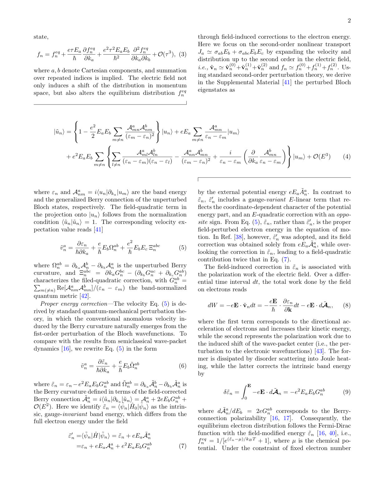
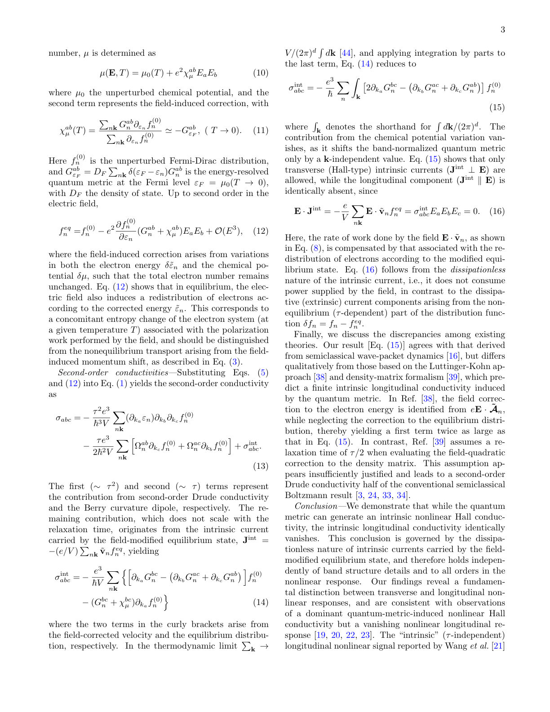
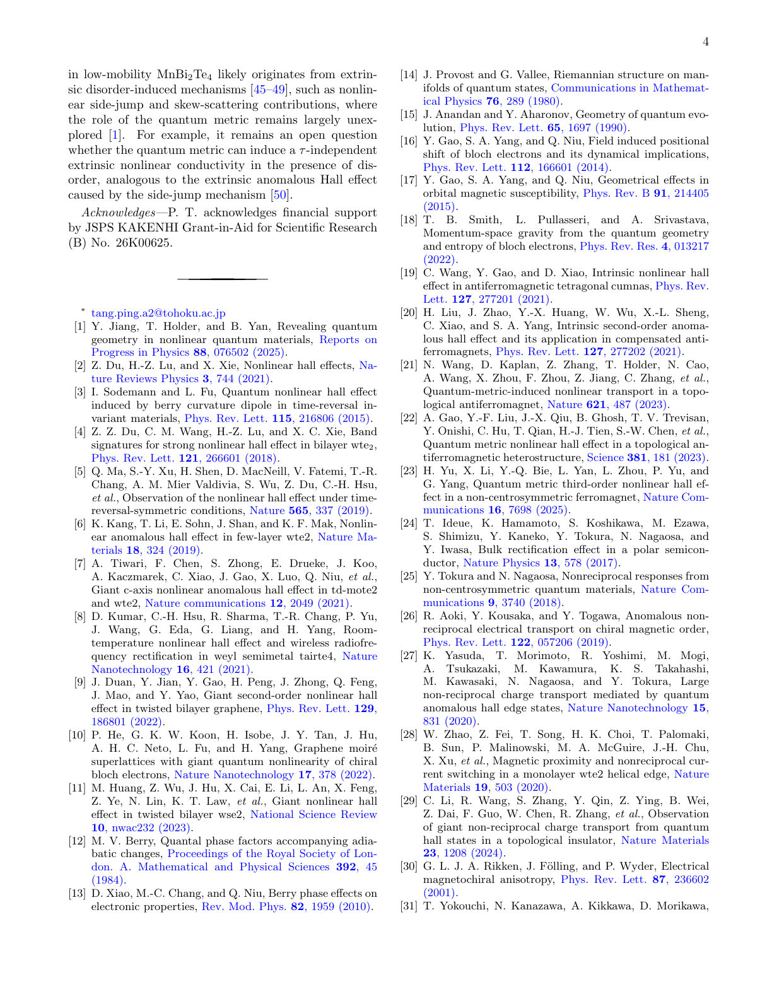
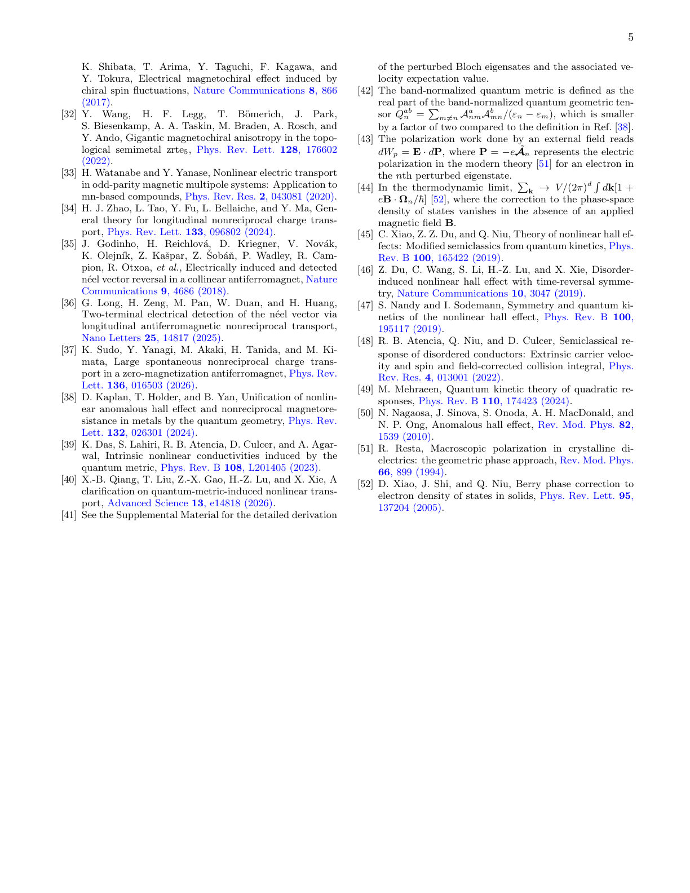
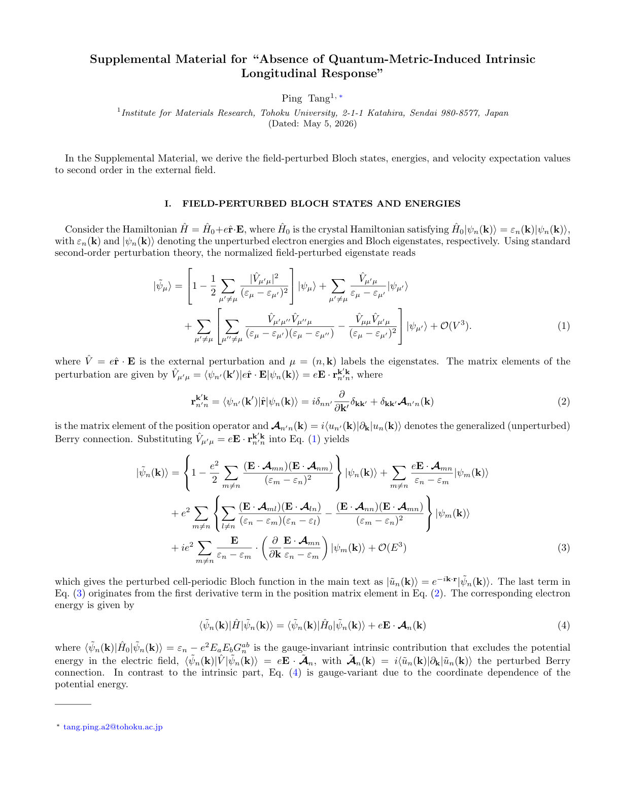
Summary. This paper proves that the quantum metric cannot induce an intrinsic longitudinal nonlinear conductivity in solids. It resolves theoretical discrepancies by showing that previous claims of a finite response were due to using gauge-variant energy instead of gauge-invariant energy. This suggests that reported longitudinal signals in materials like MnBi2Te4 likely stem from extrinsic, disorder-induced mechanisms.
Why it may be interesting. not directly relevant
Main problem. The paper investigates whether the quantum metric can generate an intrinsic longitudinal nonlinear transport response in solids, aiming to resolve theoretical inconsistencies in existing literature.
Main result. The author demonstrates that the quantum-metric-induced intrinsic longitudinal response identically vanishes due to the dissipationless nature of intrinsic currents, even though an intrinsic Hall response is allowed.
Method. The study employs standard quantum-mechanical perturbation theory up to the second order in an external electric field, utilizing semiclassical wave-packet dynamics and the Heisenberg equation of motion.
Model / system. The system consists of electrons in a crystal (metallic system) described by an unperturbed Hamiltonian H0 and subject to a uniform static electric field E.
Key observables. Nonlinear Hall conductivity, nonlinear longitudinal/nonreciprocal conductivity, intrinsic current density, Berry curvature, and the quantum metric.
Important parameters / regimes. Electric field strength E, relaxation time tau, chemical potential mu, and the quantum metric G and Berry curvature Omega.
Assumptions / limitations. The derivation assumes a uniform static electric field and is truncated at the second order of the external electric field.
Paper structure. The paper begins by defining the problem and the Hamiltonian, proceeds to derive field-perturbed Bloch states and velocities using second-order perturbation theory, simplifies the resulting tensors using the quantum metric, and concludes by demonstrating the vanishing of the longitudinal response and discussing implications for experimental discrepancies.
Nonlinear charge transport in solids has emerged as a powerful probe of the quantum geometric properties of Bloch electrons. While the Berry curvature underlies the intrinsic anomalous Hall effect, recent studies have suggested that the quantum metric may generate both \emph{intrinsic} nonlinear Hall and longitudinal transport. Here, using standard quantum-mechanical perturbation theory, we demonstrate that the quantum-metric-induced intrinsic longitudinal response identically vanishes, even though the corresponding intrinsic Hall response is allowed. This conclusion follows from the dissipationless nature of intrinsic currents and holds independently of band structure details and to all orders in the nonlinear response. Our work resolves existing inconsistencies in the theoretical formulation of quantum-metric-induced nonlinear transport and suggests a reexamination of recently reported intrinsic longitudinal responses attributed to the quantum metric.
Authors: Ken-ichi Uchida, Takamasa Hirai
Type: both · Category: other · PDF: https://arxiv.org/pdf/2605.01692v1
Analysis basis: full PDF text, analyzed in chunks
Topic relevance: spintronics-quantum-optics interface 2/5
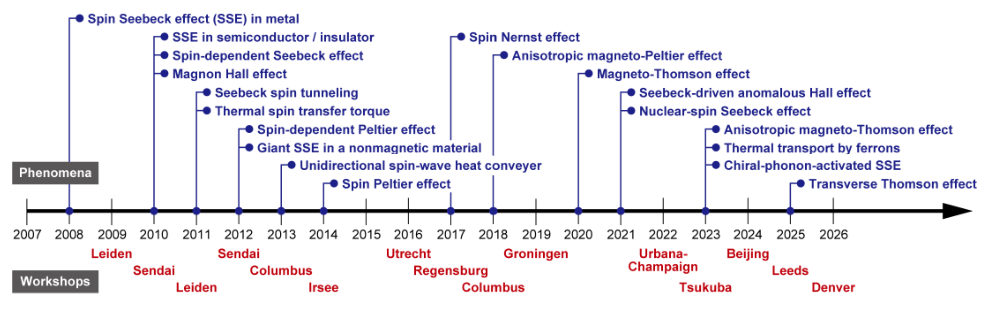
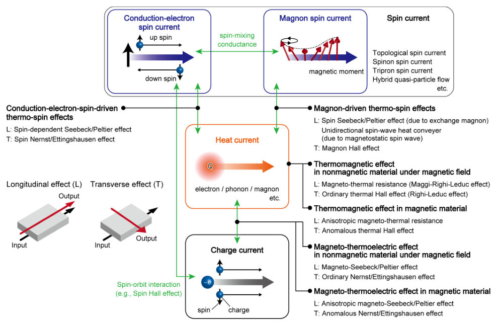
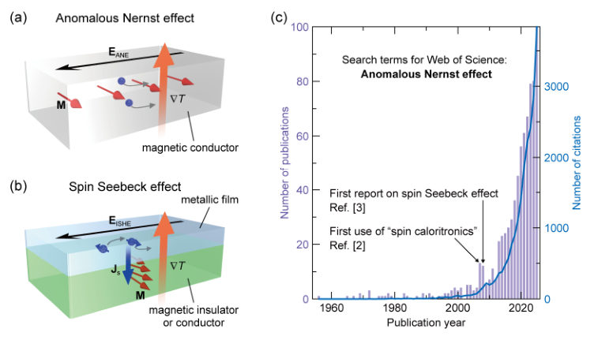
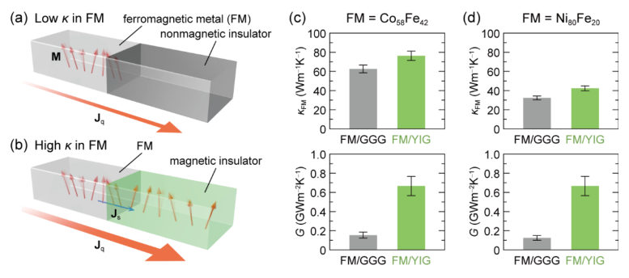
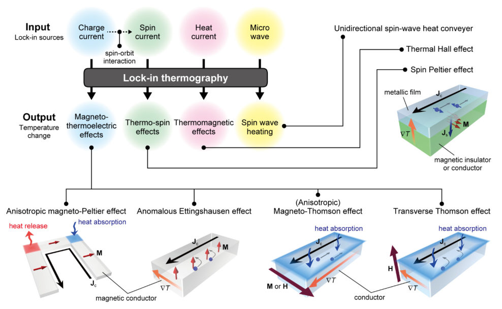
Summary. This review provides a comprehensive overview of spin caloritronics, tracing its history from fundamental spin-transport discoveries to modern applications in thermal management. It highlights how new measurement techniques and hybrid material architectures are enabling the development of efficient energy-harvesting and cooling technologies.
Why it may be interesting. not directly relevant
Main problem. The paper reviews the historical development and future prospects of spin caloritronics, focusing on the conversion between heat, charge, and spin currents and the transition from fundamental physics to materials engineering.
Main result. The review highlights the evolution of the field from longitudinal to transverse effects and identifies 'magnon engineering' and hybrid structures like Artificially Tilted Multilayers (ATMLs) as key paths toward efficient energy harvesting and thermal management.
Method. The authors synthesize experimental progress using techniques such as lock-in thermography, time-domain thermoreflectance, and the inverse spin Hall effect to analyze various magneto-thermoelectric and thermo-spin phenomena.
Model / system. The systems studied include magnetic heterostructures, magnetic bilayers, and multilayers (e.g., Cu/CoFe), as well as topological materials, magnetic insulators (YIG), and ferroelectric systems.
Key observables. Spin Seebeck Effect (SSE), Anomalous Nernst Effect (ANE), Spin Peltier Effect (SPE), thermal conductivity, and thermoelectric coefficients (Seebeck, Nernst, Thomson).
Important parameters / regimes. Temperature gradients, magnetization direction, spin/magnon diffusion lengths, and the dimensionless figure of merit (ZT).
Figures summary. Figure 1 shows the timeline and concept of SSE; Figure 2 classifies conversion phenomena and longitudinal vs. transverse effects; Figure 3 shows ANE publication trends; Figure 5 demonstrates lock-in thermography applications; Figure 7 illustrates hybrid structure architectures.
Paper structure. The paper begins with a historical overview of spin caloritronics, followed by a classification of transport phenomena (magneto-thermoelectric, thermomagnetic, and thermo-spin), an analysis of experimental measurement techniques, a discussion on the transition to materials science and engineering (including hybrid structures), and concludes with future research directions and unexplored phenomena.
Since the beginning of the 21st century, novel energy conversion and control principles utilizing the spin degree of freedom have been discovered in the field of spin caloritronics, which integrates spintronics with thermal transport and thermoelectric properties. In this article, we review the history of development of spin caloritronics and experimental studies on various transport phenomena caused by heat-charge-spin interactions. We then discuss future prospects in spin caloritronics from the viewpoints of measurement techniques, physics, materials science, and engineering applications. Spin caloritronics is now at a turning point, transitioning from fundamental condensed matter physics to materials science, and further development is anticipated in both fundamental and applied research.
Authors: Graeme J. Ackland, Ciprian G. Pruteanu, John S. Loveday, Keishiro Yamashita
Type: theory · Category: statistical mechanics · PDF: https://arxiv.org/pdf/2605.01045v1
Analysis basis: full PDF text, analyzed in chunks
Topic relevance: non-equilibrium dynamics 1/5
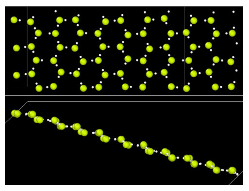
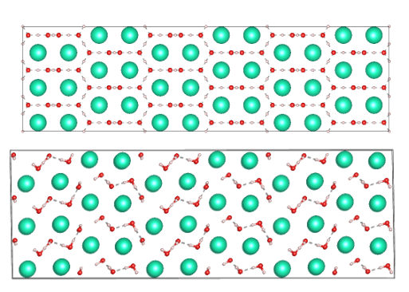
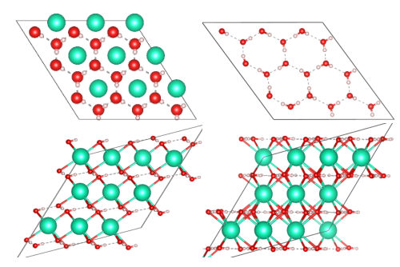
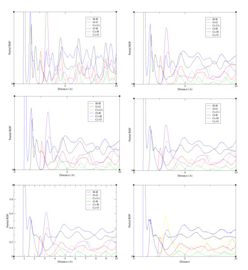
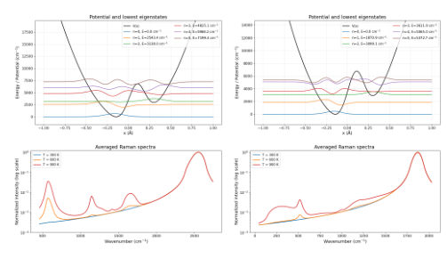
Summary. The researchers show that in CsOH.H2O, water and hydroxyl molecules are not stable entities but constantly interconvert through proton exchange. This process drives the structural transition of the crystal and provides a unique mechanism for high ionic conductivity without long-range molecular diffusion.
Why it may be interesting. The study explores a 2D analogue of water and the dynamics of a chemical-reaction-driven phase transition, which relates to many-body dynamics and the stability of networked systems.
Main problem. Understanding the atomic-level dynamics, lifetime of water molecules, and the mechanism of the order-disorder transition in the crystal CsOH.H2O.
Main result. The order-disorder transition proceeds via a chemical reaction (proton exchange) rather than molecular rotation, where water and hydroxyl units interconvert on a picosecond scale.
Method. Ab initio Molecular Dynamics (AIMD) using rSCAN and PBE functionals, combined with Density Functional Perturbation Theory (DFPT) and a 1D anharmonic Hamiltonian model for Raman spectroscopy.
Model / system. The system is caesium hydroxide monohydrate (CsOH.H2O), featuring a quasi-2D honeycomb lattice of water and hydroxide ions that acts as a 2D analogue of water.
Key observables. Raman spectra (stretching, bending, and librational modes), radial distribution functions (RDF), mean squared displacements (MSD), and proton exchange barriers.
Important parameters / regimes. Temperature range (200K to 700K), proton exchange barrier (~0.2 eV), and picosecond-scale molecular lifetimes.
Assumptions / limitations. The hydrogen arrangement obeys 'ice rules'; Raman activity is modeled using a linear polarizability and a 1D harmonic well perturbed by a Gaussian term.
Paper structure. The paper introduces the crystal structure, describes the AIMD simulation setup, analyzes the symmetry-breaking and energetic stability of the lattice, investigates the dynamical network of proton exchange, and concludes with a theoretical model for Raman signatures.
We describe the atomic-level motions in caesium hydroxide monohydrate (CsOH$\cdot$H$_2$O), which is a chemical compound containing layers of water and hydroxide ions. At this composition, each oxygen is involved in three hydrogen bonds which, in the hexagonal structure, form a quasi-2D honeycomb lattice. While oxygen and caesium atoms form a typical crystal lattice, the dynamics of the hydrogen atoms are more complex. Here we show that the covalent and hydrogen bonds are continually interconverting, meaning that the water and hydroxyl are interconverting by proton exchange. The order-disorder transition of the water and hydroxyl proceeds by chemical reaction rather than rotation or diffusion of the molecules. A hydrogen can rotate out of the layer, leaving a vacant site in the 2D layer. Such a hydrogen vacancy can diffuse rapidly by single molecule rotation, leading to fast-ionic conduction. The proton exchange leads to a novel type of Raman activity combining stretch and exchange processes, for which we develop a theoretical model. This would manifest in a broad single peak associated with both H$_2$O and OH stretches and a low frequency peak appearing at elevated temperature.
Authors: Caterina Zuffa, Marco Bardini, Fabian Gasser, Mauricio Sevilla, Robinson Cortes-Huerto, Alessandro Greco, Lorenzo Soprani, Guanzhao Wen, Jaco J. Geuchies, Mischa Bonn, Gabriele D'Avino, Lucia Maini, Hai I. Wang, Lucia Di Virgilio
Type: both · Category: disordered systems and neural networks · PDF: https://arxiv.org/pdf/2605.01049v1
Analysis basis: full PDF text, analyzed in chunks
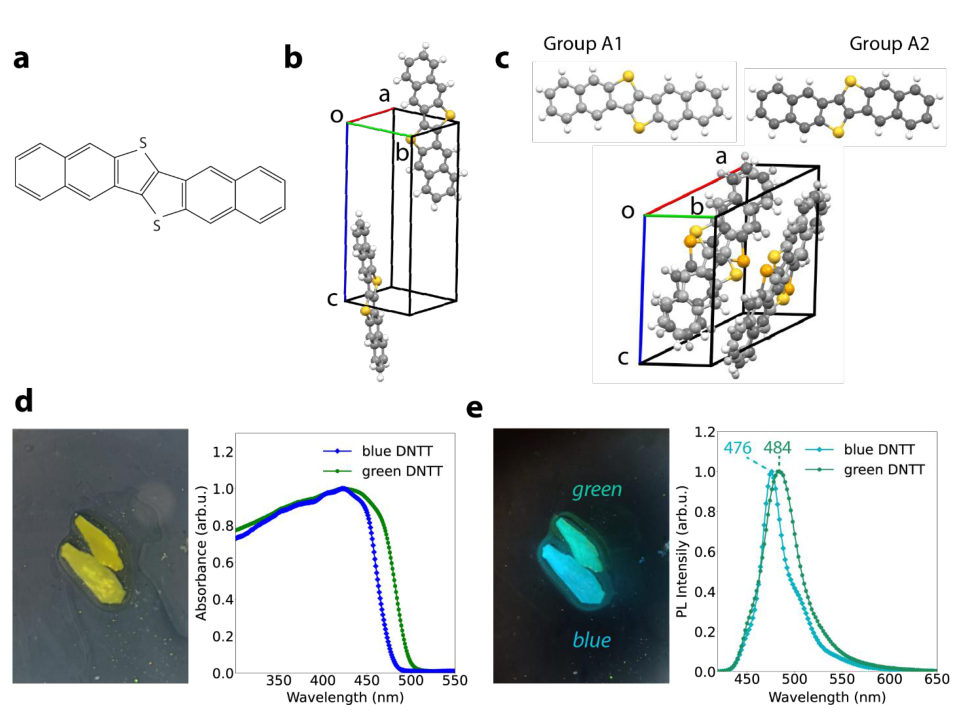
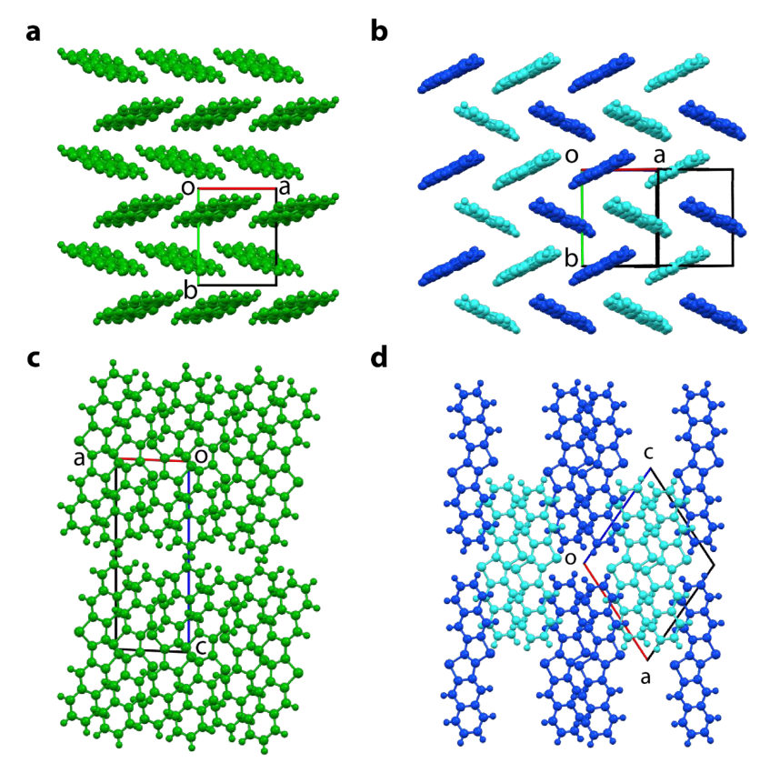
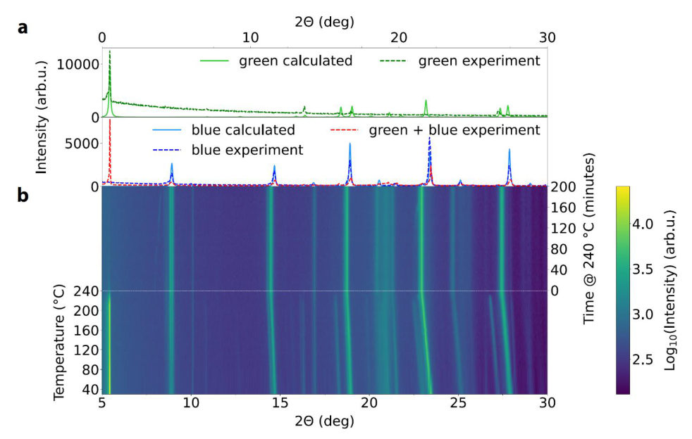

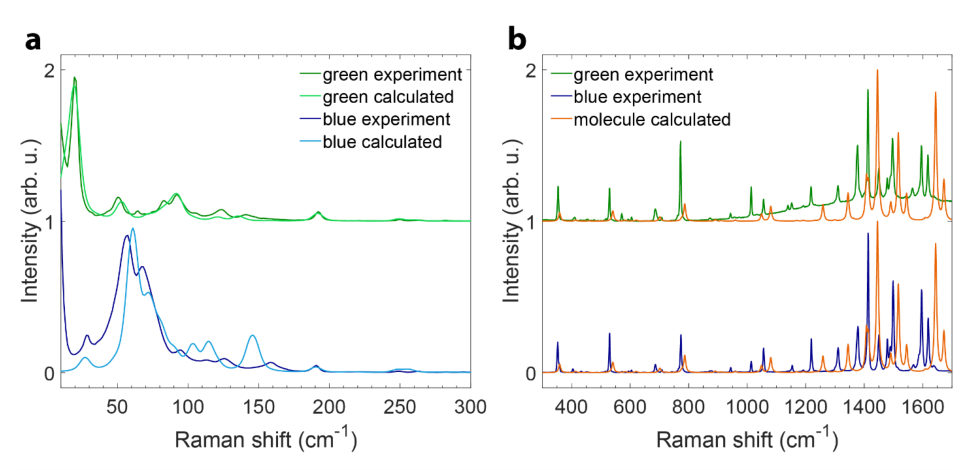
Summary. Researchers have discovered a hidden, thermodynamically stable polymorph of the organic semiconductor DNTT that features a 3D interdigitated molecular packing. This structural change shifts charge transport from a 2D to a 3D regime and significantly boosts electron mobility. This finding demonstrates that polymorphism is a powerful tool for tuning the dimensionality and efficiency of charge transport in organic electronics.
Why it may be interesting. not directly relevant
Main problem. The discovery and characterization of a previously unrecognized, thermodynamically stable bulk polymorph of the organic semiconductor DNTT and how its distinct molecular packing governs the dimensionality and efficiency of charge transport.
Main result. The identification of 'blue DNTT' featuring a 3D interdigitated herringbone structure that enables 3D charge transport and significantly enhances electron mobility compared to the well-known 2D 'green' phase.
Method. A combination of structural characterization (XRD, DSC), spectroscopy (Raman, THz, UV-Vis, PL), and computational modeling (DFT, Transient Localization Theory, and tight-binding simulations).
Model / system. The physical system is the organic semiconductor DNTT, specifically comparing two polymorphs: a metastable 2D 'green' phase and a stable 3D 'blue' phase. The transport is modeled using Transient Localization Theory (TLT) and a tight-binding model.
Key observables. Charge carrier mobility (holes and electrons), transport dimensionality (2D vs 3D), phonon spectra (low-frequency Raman/THz modes), and optical emission color.
Important parameters / regimes. Electron mobility in the blue phase exceeds hole mobility in the green phase by >2x; scattering time (tau_in) is approximately 250 fs; phase transition occurs between 210-240 C.
Assumptions / limitations. The use of the relaxation time approximation in TLT simulations and the assumption of a linear nonlocal electron-phonon coupling model.
Figures summary. Fig 1: Crystal structures, visual color difference, and optical spectra; Fig 2: Comparison of 2D vs 3D molecular packing; Fig 3: Temperature-dependent XRD showing phase transition; Fig 4: Raman spectra and THz-derived mobility/dimensionality analysis.
Paper structure. The paper begins with the discovery of the blue polymorph via optical properties, moves to structural and thermodynamic characterization of the phase transition, then investigates the impact of the new packing on vibrational modes and charge transport dynamics using THz spectroscopy and simulations.
Organic semiconductors (OSCs) are widely explored for flexible optoelectronic technologies, with performance governed not only by molecular design, but also by solid-state packing, which can give rise to polymorphism. Dinaphthothienothiophene (DNTT) is a benchmark OSC that has long been considered monomorphic. Here, we discover, isolate, and resolve the crystal structure of a previously unrecognised bulk polymorph of DNTT, termed blue DNTT owing to its characteristic blue emission. Coexisting with the well-known (green) DNTT in commercial powders, yet previously overlooked, blue DNTT represents the thermodynamically stable form. By combining X-ray diffraction, Raman, and THz spectroscopy with simulations, we demonstrate that polymorphism in DNTT reshapes the low-frequency phonon landscape and transfer-integral network, impacting charge transport. While green DNTT exhibits two-dimensional charge transport with holes more mobile than electrons, blue DNTT shows charge transport along all crystallographic directions enabled by a distinct herringbone packing. Electron mobility along the crystallographic a and b-axes in blue DNTT exceeds twice the hole mobility in the green phase. To our knowledge, this is the first reported acene-based semiconductor exhibiting three-dimensional charge transport. Polymorphism emerges as a key lever to tune charge transport dimensionality and carrier efficiency in organic semiconductors.
Authors: Viren Tyagi, Geert Brocks, Shuxia Tao
Type: theory · Category: disordered systems and neural networks · PDF: https://arxiv.org/pdf/2605.02685v1
Analysis basis: full PDF text, analyzed in chunks
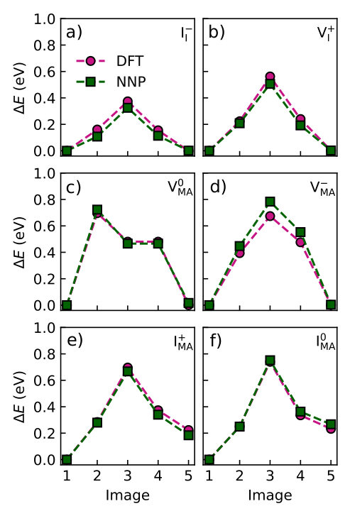
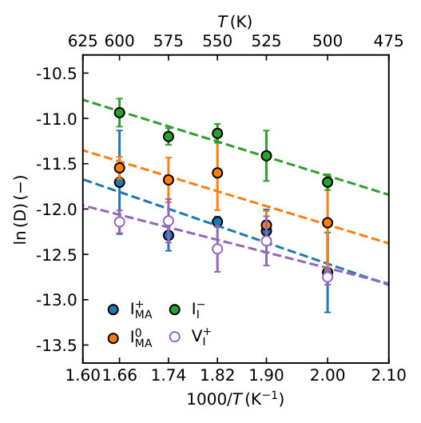
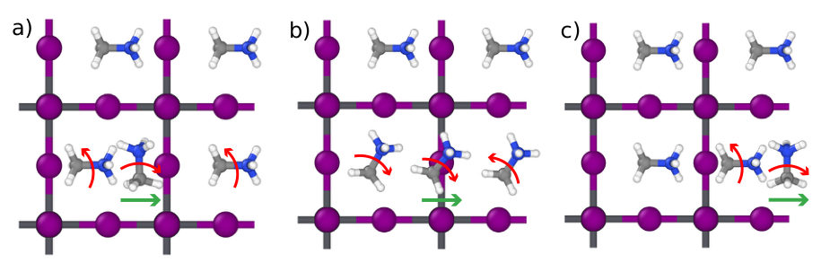
Summary. This paper uses machine-learning-based molecular dynamics to show that methylammonium cations in perovskites can migrate as fast as iodide ions through a collective motion mechanism. This finding revises the traditional understanding of ion transport in solar cell materials and helps reconcile conflicting experimental data.
Why it may be interesting. not directly relevant
Main problem. The study aims to resolve discrepancies in reported migration barriers for iodide and methylammonium defects in MAPbI3 and to understand the microscopic mechanisms of cation and anion migration.
Main result. The researchers discovered that MA interstitials migrate as rapidly as iodide defects due to a concerted motion of three neighboring MA ions, and they found that MA vacancy migration is negligible, providing a unified picture of ion transport.
Method. Molecular dynamics simulations were performed using neural network potentials (Allegro model) trained on DFT data (SCAN+rVV10 functional) and validated using the climbing image nudged elastic band method.
Model / system. The physical system is the hybrid organic-inorganic perovskite MAPbI3, specifically focusing on the movement of iodide (anion) and methylammonium (cation) point defects including vacancies and interstitials.
Key observables. Migration barriers (Eb), diffusion coefficients (D), activation energies (Ea), and pre-exponential factors (D0).
Important parameters / regimes. Temperature range of 500 K to 600 K for MD simulations; migration barriers between 0.15 and 0.20 eV.
Assumptions / limitations. The neural network potential is assumed to accurately reproduce DFT-level accuracy for forces and energies; the study focuses on intrinsic bulk diffusion.
Figures summary. Figure 1 compares energy profiles of migration paths between DFT and NNP; Figure 2 shows temperature-dependent diffusion coefficients via Arrhenius plots; Figure 3 provides a schematic of the migration mechanism.
Paper structure. The paper introduces the problem of defect mobility, describes the development and validation of the neural network potential, presents the results of MD simulations for various defect species, and concludes by comparing findings to experimental literature.
Passivating defects and restricting defect mobilities in halide perovskites to increase device lifetimes has become a main field of research. Modeling structure and mobility of point defects is an essential contribution to this endeavor. We employ molecular dynamics, based on neural network potentials trained on density functional theory data, to model ion migration in MAPbI$_3$ triggered by I and MA vacancies or interstitials. Most of these species diffuse rapidly at room temperature, with migration barriers between 0.15 and 0.20 eV. MA interstitials are highly mobile despite their molecular nature, owing to a concerted migration mechanism involving multiple MA ions. No evidence of MA vacancy migration is obtained. Whereas diffusion of I-related defects appreciably depends on their charge state, diffusion of MA defects does not. These results revise the conventional picture of ion transport in hybrid perovskites and highlight the role of collective molecular motion in enabling fast ionic migration.
Authors: Eugene Yashin
Type: theory · Category: strongly correlated electrons · PDF: https://arxiv.org/pdf/2605.02082v1
Analysis basis: full PDF text, analyzed in chunks
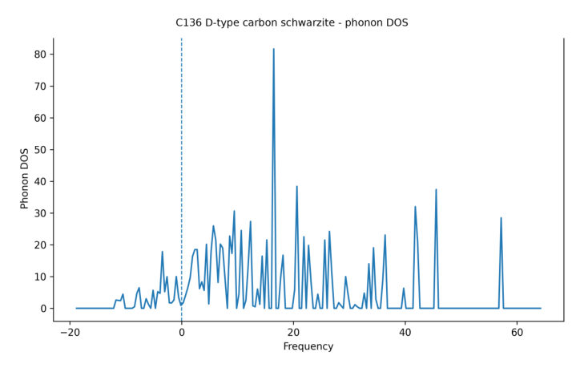
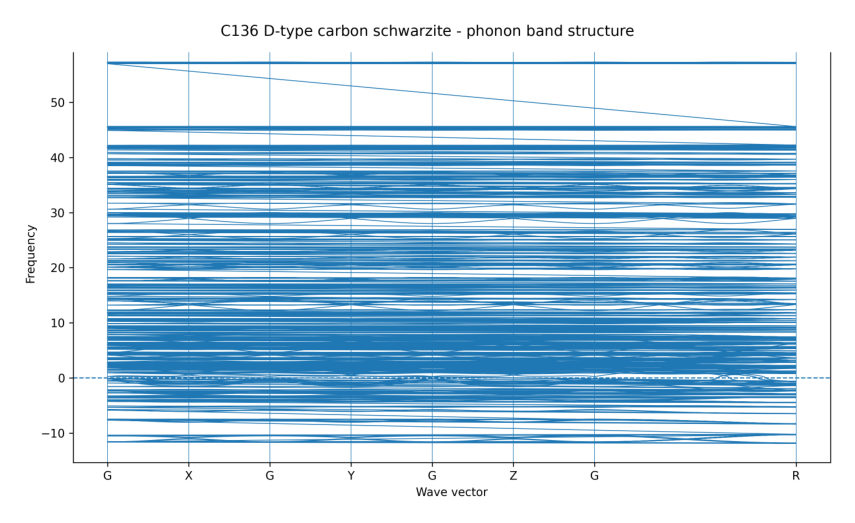
Summary. This paper uses first-principles calculations to show that a specific 3D carbon network, C136, is prone to magnetic and structural instabilities due to its flat-band electronic structure. It identifies these schwarzites as candidate platforms where magnetism, lattice distortions, and superconductivity compete.
Why it may be interesting. not directly relevant
Main problem. Investigating whether the negative Gaussian curvature in 3D sp2-bonded carbon schwarzites (C136) generates electronic structures, such as flat-bands, strong enough to drive broken-symmetry instabilities like magnetism or structural reconstruction.
Main result. The study finds that C136 is not a stable metal but exhibits significant spin-polarized instability (lowering energy by ~0.50 eV) and lattice instability characterized by large imaginary-frequency phonon modes.
Method. First-principles Density Functional Theory (DFT) calculations using the Quantum ESPRESSSE software with the PBE functional, combined with the finite-displacement method via Phonopy for phonon calculations.
Model / system. A 136-atom D-type carbon schwarzite (C136), which is a three-dimensional sp2-bonded carbon network with negative Gaussian curvature and non-trivial ring topology.
Key observables. Total magnetization (~11.01 Bohr magnetons), energy difference between spin-polarized and non-spin-polarized states, and phonon frequency (specifically the softest mode at -11.90 THz).
Important parameters / regimes. High density of states (DOS) near the Fermi level, flat-band features, and the wave vector q = [0.5, 0.5, 0.5] for the softest phonon mode.
Assumptions / limitations. The phonon calculations were performed on a 1x1x1 supercell and have not yet been fully converged with respect to supercell size; the structure has not undergone full variable-cell relaxation.
Figures summary. Table 1 summarizes SCF calculation results (energy and magnetization); Figure 1 shows the phonon density of states with negative spectral weight; Figure 2 shows the diagnostic phonon band structure highlighting imaginary branches.
Paper structure. The paper introduces the schwarzite system, presents DFT results for electronic and magnetic properties, details phonon calculations revealing structural instability, and concludes by discussing the competition between magnetism, lattice reconstruction, and potential superconductivity.
Carbon schwarzites are three-dimensional sp2-bonded carbon networks with negative Gaussian curvature. Because negative curvature can reorganize the pi-electron manifold, these materials provide a natural platform for flat-band physics, enhanced density of states, and competing broken-symmetry phases. Here I report first-principles calculations for a 136-atom D-type carbon schwarzite cell using density-functional theory. Non-spin-polarized calculations show a metallic electronic structure with pronounced flat-band features and high density of states near the Fermi level. A spin-polarized calculation converges to a magnetic solution with total magnetization of approximately 11.01 Bohr magnetons per 136-atom cell and absolute magnetization of approximately 12.15 Bohr magnetons per cell. The spin-polarized state is lower in energy than the corresponding non-spin-polarized solution by approximately 0.03687 Ry, or about 0.50 eV per cell. Finite-displacement phonon calculations using Phonopy and Quantum ESPRESSO, with 78 symmetry-reduced displaced configurations, further reveal substantial imaginary-frequency modes in the ideal submitted structure. The softest mode in the calculated band path occurs near q = [0.5, 0.5, 0.5], with frequency approximately -11.90 THz. These results indicate that ideal C136 is not a simple harmonically stable metallic carbon phase. Instead, it appears to be a flat-band carbon network close to spin and lattice broken-symmetry instabilities. Possible interpretations include Stoner-like flat-band magnetism and Peierls- or charge-density-wave-like structural reconstruction. Superconductivity is not claimed here as an established ground state; rather, the results identify C136 and related D-type schwarzites as candidate platforms where magnetism, soft-mode reconstruction, and possible doped or structurally stabilized superconducting phases compete.
Authors: Jakob Kjærulff Svaneborg, Kristian Sommer Thygesen
Type: theory · Category: other · PDF: https://arxiv.org/pdf/2605.02576v1
Analysis basis: full PDF text, analyzed in chunks
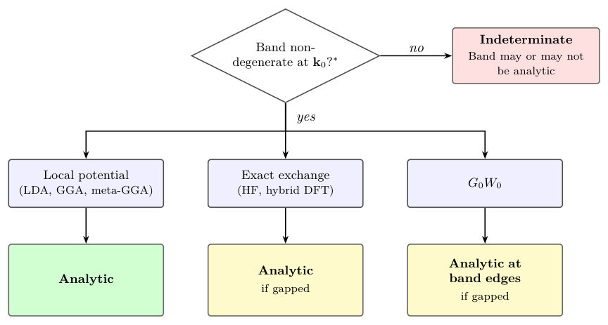
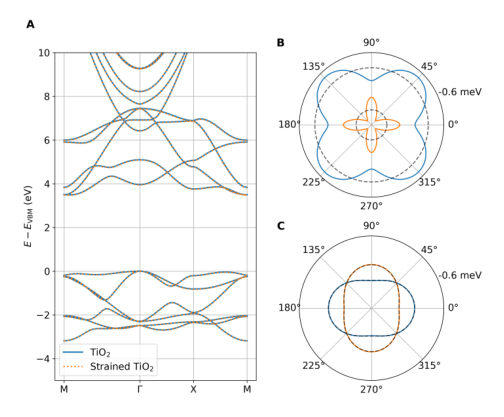
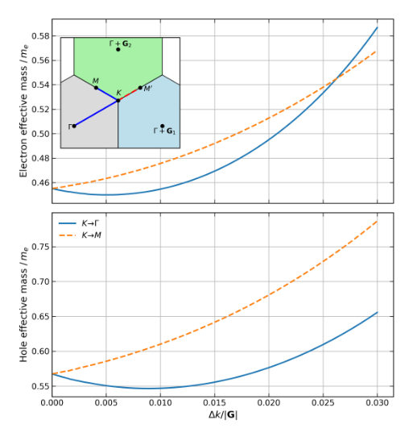
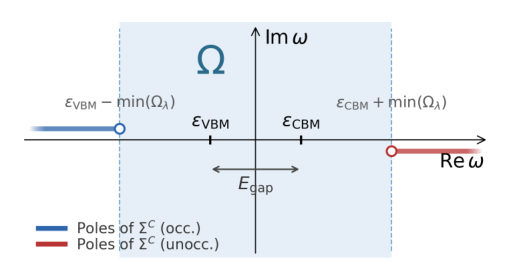
Summary. This paper provides a rigorous mathematical foundation for the effective mass approximation in semiconductors, proving that band dispersion is analytic at non-degenerate extrema for standard computational methods. It also establishes that any observed anisotropy in the effective mass tensor must strictly follow the symmetry of the crystal's point group, providing a way to identify numerical errors in first-principles calculations.
Why it may be interesting. not directly relevant
Main problem. Investigating the validity of the effective mass approximation (EMA) by determining whether band dispersion is real-analytic at non-degenerate extrema and establishing symmetry constraints on the effective mass tensor.
Main result. The authors prove that band dispersion is real-analytic at any non-degenerate extremum for standard ab initio Hamiltonians (DFT, hybrid DFT, and G0W0), implying that band warping is intrinsically tied to degeneracy. They also provide a symmetry-based classification of the effective mass tensor for all 32 crystallographic point groups.
Method. The study employs mathematical proofs using the Implicit Function Theorem, Weierstrass theorem, and Combes-Thomas estimates, alongside group theory for symmetry analysis and numerical finite-difference calculations.
Model / system. Gapped solids (semiconductors and insulators), including 2D materials like monolayer MoS2 and TiO2, modeled using DFT (LDA, GGA, meta-GGA), hybrid functionals, and G0W0 quasiparticle energies.
Key observables. Effective mass tensor, band dispersion E(k), band warping, and quasiparticle energies.
Important parameters / regimes. Non-degenerate vs. degenerate band extrema, little group symmetry (Gk0), and the analyticity strip (Omega) in the frequency domain.
Assumptions / limitations. The system must be gapped; for G0W0, the quasiparticle correction must be smaller than the Kohn-Sham gap; the proof assumes the non-local potential decays exponentially.
Figures summary. Figure 1 is a decision tree for the applicability of the analyticity theorem; Figure 2 shows numerical results for monolayer TiO2; Figure 4 illustrates the spectral structure and analyticity region of the correlation self-energy.
Paper structure. The paper begins by defining the problem of EMA validity, proceeds to a mathematical proof of analyticity for local and non-local Hamiltonians, uses group theory to derive symmetry constraints on the mass tensor, and concludes with numerical applications to MoS2 and TiO2.
The effective mass approximation is widely used across models of carrier transport, optical response, and excitons in semiconductors and insulators, but its validity hinges on the assumption that the band dispersion $E_n(\mathbf{k})$ at the relevant extremum is analytic. We prove that analyticity holds at any non-degenerate extremum for the standard ab initio Hamiltonians, including density functional theory with local or hybrid exchange-correlation functionals and for band-edge $G_0W_0$ quasiparticle energies in gapped systems. Band non-analyticity (or warping) in these settings is therefore intrinsically tied to degeneracy. We then use group theory to determine the symmetry-allowed form of the effective mass tensor for each of the 32 crystallographic point groups, providing a stringent consistency check on first-principles calculations. As a representative application, we show that the electron and hole effective masses at the $K$ point of monolayer MoS$_2$ must be strictly isotropic at the DFT and $G_0W_0$ levels.
Authors: Alex Hallett, Nicola A. Spaldin
Type: theory · Category: strongly correlated electrons · PDF: https://arxiv.org/pdf/2605.01927v1
Analysis basis: full PDF text, analyzed in chunks
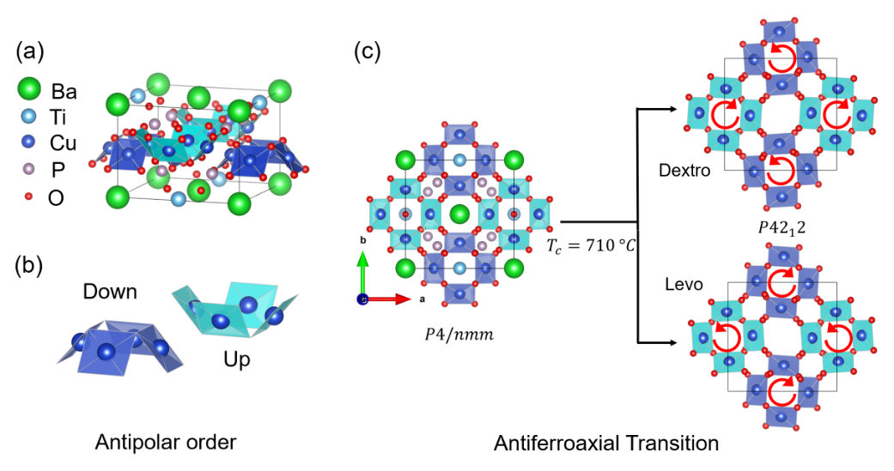
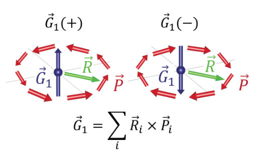
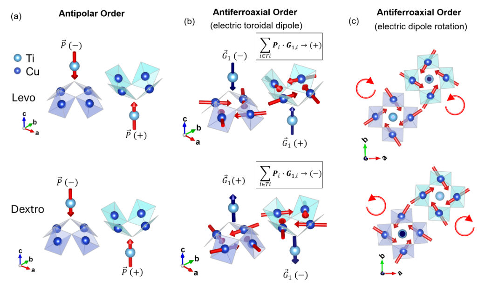
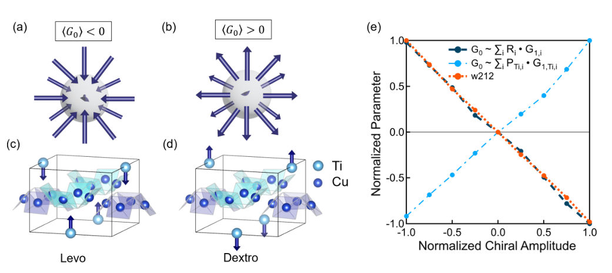
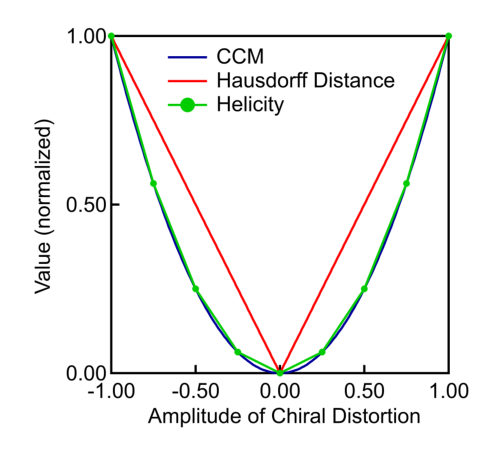
Summary. This paper uses first-principles calculations to show that chirality in the material BTCPO is driven by the coupling of antipolar electric dipoles and electric toroidal dipoles. It identifies specific electronic multipole moments that can act as reliable order parameters to distinguish between different enantiomers. This provides a theoretical framework for quantifying chirality in complex crystal structures.
Why it may be interesting. not directly relevant
Main problem. The study seeks to find a rigorous, sign-sensitive quantitative measure for chirality in crystals and to identify the specific multipolar origins of the ferrochiral phase transition in BaTiOCu4(PO4)4.
Main result. The authors identify that chirality arises from the combination of antipolar electric dipoles and antiferroaxial electric toroidal dipoles, and demonstrate that multipole moments like the electric toroidal monopole and the w212 moment serve as effective order parameters where standard structural measures fail.
Method. First-principles calculations using Density Functional Theory (DFT) with the VASP package, including DFT+U for Cu atoms and non-collinear spin-orbit coupling, alongside multipole expansion of the density matrix.
Model / system. The material BaTiOCu4(PO4)4 (BTCPO), which features Cu4O12 cupolas that undergo an antiferroaxial rotation during a ferrochiral phase transition.
Key observables. Electric toroidal dipole moments, electric toroidal monopole, electric dipole moments, and the w212 multipole moment.
Important parameters / regimes. Hubbard U = 4 eV on Cu atoms; transition temperature of 710 degrees C.
Assumptions / limitations. The study assumes the validity of the PBEsol GGA functional and the DFT+U approximation for describing the electronic and magnetic ground state.
Figures summary. Fig 1 shows the crystal structure and cupola arrangement; Fig 3 illustrates the rotational patterns of electric dipoles and the resulting toroidal moments; Fig 4 shows the hedgehog-like patterns of toroidal monopoles; Fig 5 compares various structural measures and their failure to distinguish enantiomers.
Paper structure. The paper introduces the problem of quantifying chirality, describes the material and computational methods, presents the identification of multipolar order parameters, evaluates the success/failure of various chirality measures, and concludes with future experimental directions.
We present a first principles study of the ferrochiral phase transition in chiral BaTiOCu$_4$(PO$_4$)$_4$, which has been shown using X-ray diffraction to proceed via the antiferroaxial rotation of antipolar structural units. We analyze the atomic-site electric and magnetic multipole moments to identify connections between these multipoles and chirality and corroborate the previous experimental interpretation. We show that antiferroically ordered atomic-site electric toroidal dipole moments act as an order parameter for the antiferroaxial rotations, and that the overall chiral order is parameterized by the composite order of the antipolar electric dipole and electric toroidal dipole moments. Finally, we evaluate the suitability of various proposed order parameters for chirality, show that some can be excluded and suggest the most promising directions for future exploration.
Authors: Gaolei Zhao, Juhe Liu, Jinkai Huo, Tian Han, Yunhao Tong, Hu Wang, Konstantin Kozadaev, Andrei Zheltkovich, Changsen Sun, Alexei Tolstik, Andrey Novitsky, Lujun Pan, Dawei Li
Type: both · Category: other · PDF: https://arxiv.org/pdf/2605.01285v1
Analysis basis: full PDF text, analyzed in chunks
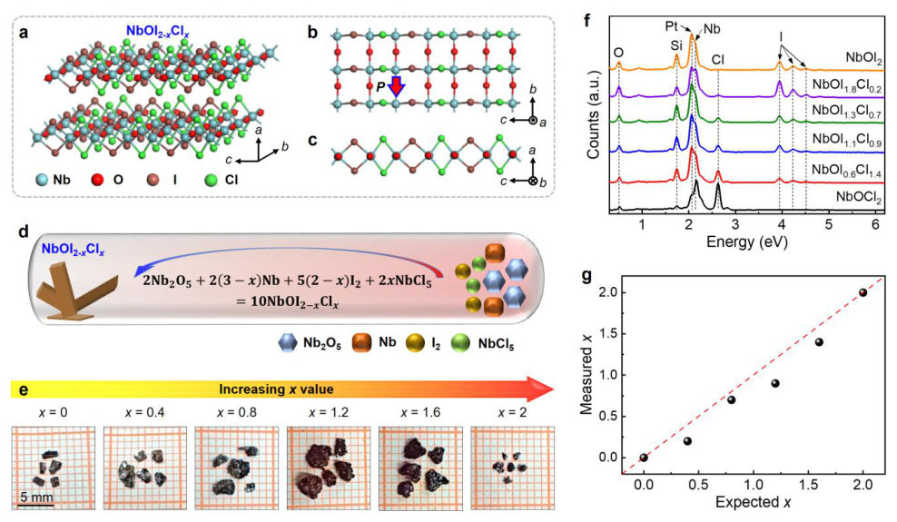
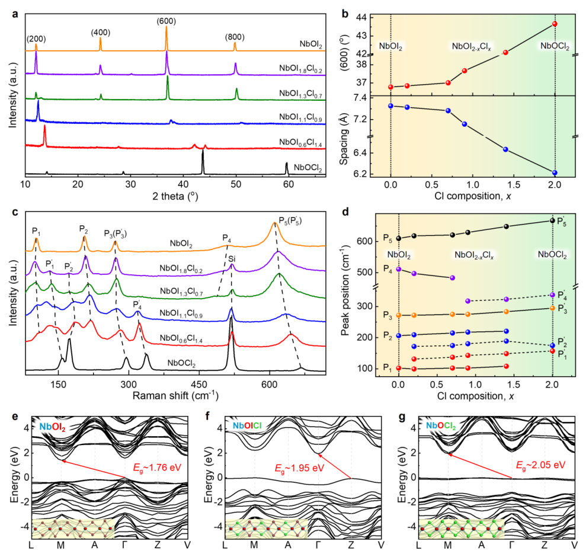
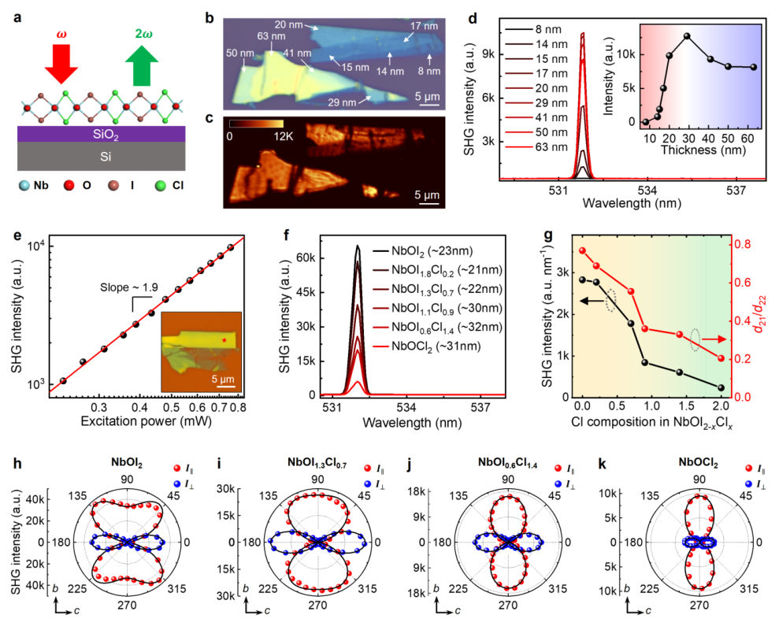
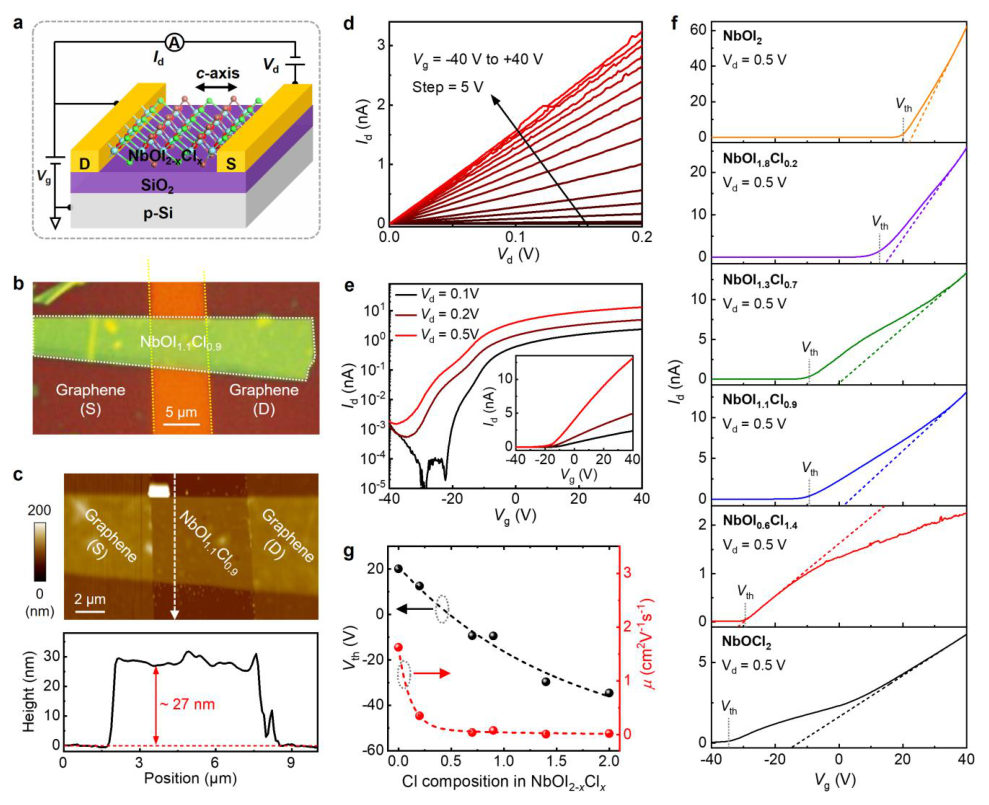
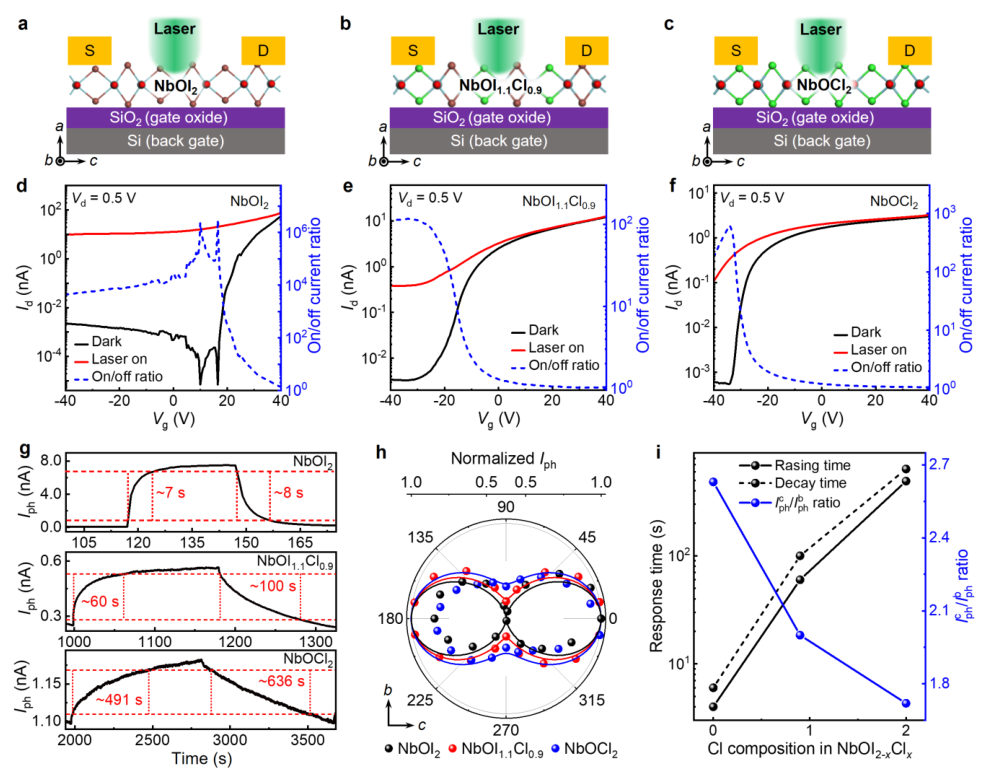
Summary. This paper reports the successful creation of tunable NbOI2-xClx alloys where the electrical and optical properties can be precisely engineered by adjusting the iodine-to-chlorine ratio. By controlling the composition, the researchers tuned the bandgap, ferroelectric response, and transistor characteristics, providing a versatile platform for next-generation nanoelectronics and optoelectronics.
Why it may be interesting. not directly relevant
Main problem. The difficulty in achieving non-volatile, precise modulation of the optical and electrical properties in the NbOX2 (X = I, Cl) family of van der Waals ferroelectrics.
Main result. The researchers demonstrated that NbOI2-xClx alloys can be grown with controlled stoichiometry, allowing for the precise tuning of bandgap, lattice parameters, ferroelectric SHG signals, and FET transport properties.
Method. Chemical Vapor Transport (CVT) was used for crystal growth, combined with XRD, Raman, and EDX for structural characterization, DFT for electronic structure calculations, and SHG and FET measurements for optical and electrical analysis.
Model / system. The system consists of NbOI2-xClx, a series of 2D van der Waals ferroelectric alloys with a low-symmetry monoclinic crystal structure (space group C2) where Nb atoms are displaced from the center of the octahedra.
Key observables. Bandgap (Eg), Second Harmonic Generation (SHG) intensity and polarization, threshold voltage (Vth), carrier mobility (mu), and photodetector responsivity.
Important parameters / regimes. The Cl molar ratio (x), interlayer spacing, and the nonlinear optical tensor ratio (d21/d22).
Figures summary. Fig 1: Crystal structure, growth method, and EDX composition verification; Fig 2: XRD patterns, lattice spacing, Raman modes, and calculated band structures; Fig 3: SHG setup, thickness dependence, and polarization patterns; Fig 4: FET transfer and output characteristics; Fig 5: Photodetector photo-response and polarization sensitivity.
Paper structure. The paper begins with the synthesis and structural verification of the alloys, followed by the investigation of electronic band structure changes via DFT, then moves to nonlinear optical properties via SHG, and concludes with the electrical performance of FETs and photodetectors.
Layered niobium oxide dihalides NbOX2 (X = I, Cl), as a new family of Van der Waals (vdW) ferroelectrics, have attracted extensive attention, while achieving non-volatile modulation of their optical and electrical properties remains challenging, thereby limiting their integration into next-generation nanoelectronics and optoelectronics. Here, we report the controlled fabrication of highly crystalline NbOI2-xClx vdW alloys with composition-driven tunable optical and electrical properties via a chemical vapor transport method. Comprehensive experimental characterization combined with first-principles calculation shows that the crystal lattices, phonon modes, and band structures of NbOI2-xClx can be well tailored, which are distributed between NbOI2 and NbOCl2. Both the amplitude and polarization of second harmonic generation optical signal in NbOI2-xClx exhibit pronounced compositional dependence, offering optical evidence for tunable in-plane ferroelectric characteristic. Moreover, field-effect transistors based on NbOI2-xClx display robust n-type semiconducting behavior, with threshold voltage and carrier mobility precisely modulated through adjustment of I/Cl molar ratio. Furthermore, 2D NbOI2-xClx photodetectors across all compositions exhibit exceptional gate-tunable current on/off ratio and strong polarization-sensitive photo-response. This study thus provides a new vdW ferroelectric material platform with tunable optical and electrical properties, paving the path for its implementation in modern nanophotonics and nanoelectronics.
Authors: Yang Huang, Jingrun Chen
Type: theory · Category: disordered systems and neural networks · PDF: https://arxiv.org/pdf/2605.02267v1
Analysis basis: full PDF text, analyzed in chunks
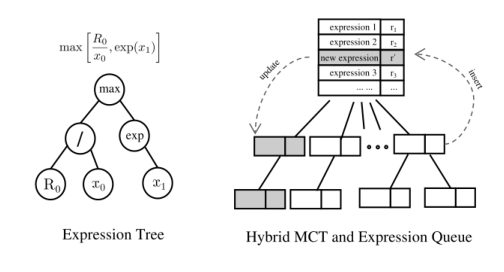
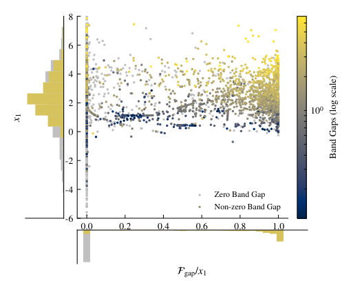
Summary. This paper presents a new symbolic regression method that discovers simple mathematical formulas to predict material properties from chemical composition. Unlike deep learning, it provides interpretable equations that capture periodic trends in the periodic table. The model performs as well as complex black-box models while using much less computational memory and parameters.
Why it may be interesting. not directly relevant
Main problem. The challenge of predicting materials properties from chemical composition with high accuracy and physical interpretability, avoiding the 'black-box' nature of traditional neural networks.
Main result. The framework achieves competitive accuracy with state-of-the-art models using significantly fewer parameters, providing explicit analytical expressions and recovering periodic chemical trends.
Method. A hybrid search algorithm combining Monte Carlo Tree Search (MCTS) with Genetic Programming (GP), supplemented by gradient-based refinement using L-BFGS.
Model / system. A composition-weighted symbolic regression framework that learns analytical functional forms and elemental weights directly from chemical composition without predefined descriptors.
Key observables. Band gap (MAE), metallicity (ROC-AUC), and glass formation (ROC-AUC).
Important parameters / regimes. Learnable elemental weights (w_i) for each element in the periodic table and composition-weighted latent descriptors.
Assumptions / limitations. Assumes that physically meaningful governing relations are typically compact and structured, and that the optimization landscape is piecewise differentiable.
Figures summary. Figure 1 shows the hybrid MCTS-GP framework; Figure 2 visualizes periodic trends in learned elemental weights; Figure 3 shows the relationship between a gating factor and band gap; Figure 4 compares predicted vs. experimental band gaps for III-V alloys.
Paper structure. The paper introduces the problem of interpretable property prediction, details the hybrid MCTS-GP architecture and optimization strategy, presents benchmarks on MatBench tasks, validates the model on III-V semiconductor alloys, and discusses limitations regarding complexity and data dependency.
We introduce a composition-weighted symbolic regression framework for interpretable prediction of materials properties directly from chemical composition. The method jointly learns analytical functional forms and task-dependent elemental weightings without predefined descriptors. By incorporating max/min operators, it naturally enforces constraints such as non-negative band gaps and bounded classification probabilities, unifying regression and classification tasks. Efficient search is achieved through a hybrid Monte Carlo tree search--genetic programming algorithm with gradient-based refinement and parallel computation. Benchmarks on MatBench tasks show competitive accuracy relative to state-of-the-art black-box models while yielding explicit analytical expressions. Applied to III--V semiconductor alloys, the model produces smooth composition-dependent trends and learned elemental weights with chemically meaningful periodic behavior. This framework provides a scalable and interpretable route for materials discovery and property screening.
Authors: Ruiheng Geng, Ka Hung Chan, Xinyue Huang, Nobumichi Tamura, Faqiang Zhang, Wanjia Han, Yang Zhang, Chenbo Zhang, Xian Chen
Type: both · Category: statistical mechanics · PDF: https://arxiv.org/pdf/2605.01791v1
Analysis basis: full PDF text, analyzed in chunks
Summary. This paper demonstrates how tuning the order of a phase transition from first-order to second-order via chemical doping can optimize energy harvesting. By finding a 'sweet spot' in the Ba1-xSrxTiO3 system, the researchers achieved a device that is both highly efficient and capable of stable operation over 10,000 cycles.
Why it may be interesting. not directly relevant
Main problem. Optimizing pyroelectric energy harvesting from low-grade heat by resolving the trade-off between high energy density (from first-order phase transitions) and high operational stability/low leakage (from second-order phase transitions).
Main result. The identification of a compositional 'transitional regime' in Ba1-xSrxTiO3 (specifically x=0.19) that achieves optimal lattice compatibility, suppressing leakage by two orders of magnitude while maintaining high energy conversion efficiency (5.5%) and long-term stability.
Method. The study uses solid-state synthesis, Differential Scanning Calorimetry (DSC) for thermal analysis, Synchrotron X-ray Diffraction for structural characterization, and FerroAI (a deep-learning model) for phase diagram prediction.
Model / system. The physical system is Barium Strontium Titanate (Ba1-xSrxTiO3) ceramics, specifically focusing on the evolution of ferroelectric-to-paraelectric phase transitions as a function of Strontium doping.
Key observables. Phase transformation order, latent heat, lattice distortion (via peak splitting), pyroelectric coefficient (|dP/dT|), leakage current density, and energy conversion efficiency.
Important parameters / regimes. Sr content (x in [0, 0.3]), phase transformation temperature (Tc), lattice compatibility metric (|lambda2 - 1|), and energy density (mJ/cm3).
Assumptions / limitations. The study assumes that the nominal Sr content accurately represents the final chemical composition and that numerical differentiation of P-T profiles is sufficient for calculating pyroelectric coefficients.
Figures summary. Figure 1 shows DSC heat flow curves, predicted vs. experimental phase diagrams via FerroAI, and latent heat vs. Sr composition. Figure 5 shows the multilayer capacitor (MLCC) architecture.
Paper structure. The paper introduces the energy harvesting problem, details the material synthesis and characterization methods, presents the discovery of the transitional phase regime through thermal and structural analysis, demonstrates device-level energy conversion in an MLCC, and concludes with stability testing.
Phase-transforming pyroelectric materials have emerged as promising candidates for low-grade thermal energy harvesting. However, whether first-order transformations with large pyroelectric coefficient or second-order transformations with better reversibility are preferable remains unclear. Here we report compositionally tunable phase transformations in Ba$_{1-x}$Sr$_x$TiO$_3$ ($x \in [0, 0.3]$), revealing evolution from first-order to second-order character. We identify a transitional regime between Sr$_{0.15}$ and Sr$_{0.22}$ where transformation mechanism fundamentally changes. Within this regime, Sr$_{0.19}$ achieves optimal lattice compatibility, exhibiting electrical leakage suppressed by over two orders of magnitude while retaining substantial polarization response. Energy conversion demonstrations show the multilayer Sr$_{0.19}$ device delivers pyroelectric current of $\sim$1.6 $μ$A at 64$~^\circ$C with an energy density of 1.6 mJ/cm$^3$ per cycle and 5.5\% conversion efficiency. Remarkably, this composition operates stably over 10,000 full energy conversion cycles without external bias field or recharging, demonstrating that transitional regime compositions provide the optimal balance between energy density and operational durability for practical low-grade heat harvesting.
Authors: Muhammed Hüseyin Güneş, Ayoub Aouina, Vitaly Gorelov, Matteo Gatti, Lucia Reining
Type: theory · Category: numerical methods · PDF: https://arxiv.org/pdf/2605.02492v1
Analysis basis: full PDF text, analyzed in chunks

Summary. This paper proposes a new way to calculate electron density in complex materials by using simple, explicit formulas derived from a model electron gas. By using a 'connector' technique, the authors can achieve high accuracy without the heavy computational cost of solving the full Kohn-Sham equations, making it a promising route for rapid materials design.
Why it may be interesting. not directly relevant
Main problem. The challenge of developing simple, explicit, and computationally efficient functionals for electron charge density that depend directly on the Kohn-Sham potential, avoiding the need to solve the full Schrödinger equation.
Main result. The authors demonstrate that a hierarchy of approximations, specifically the 'Connector of the Theory' (COT) approach, can accurately and efficiently approximate charge density in highly inhomogeneous systems like cubic helium.
Method. The method uses a 'connector' strategy to replace higher-order Taylor expansion terms of a real system with optimized data from a Homogeneous Electron Gas (HEG) model, utilizing the Lindhard response function.
Model / system. The study uses the Homogeneous Electron Gas (HEG) as a fundamental building block and tests the developed functionals on cubic helium, a prototypical strongly inhomogeneous solid, under various compression and expansion states.
Key observables. Electron charge density n(r), total electron number (N_el), Hartree energy, and orbital-free kinetic energy functionals (TFvW, PC07).
Important parameters / regimes. Kohn-Sham potential (v_KS), Lindhard density-density response function, lattice constants (ranging from 2.5 to 15 Bohr), and the alpha-ansatz parameters (A and B).
Assumptions / limitations. The chemical potential is assumed to be zero (valid for extended systems); the study focuses on the Kohn-Sham potential as a given input rather than including explicit interaction effects in the functional itself.
Figures summary. Figure 1 compares KS potentials with connector potentials; Figure 2 shows Taylor expansion accuracy; Figure 3 compares various density approximations for helium; Figure 5 shows density profiles; Figure 6 shows parameter fitting results; Figure 7 shows density under compression; Figure 9 and 10 show error distributions (MADE) and errors in physical observables.
Paper structure. The paper introduces the problem of density functionals, defines the HEG model and the COT strategy, presents a hierarchy of approximations (LPA to COT1-alpha), tests these against benchmark KS results using cubic helium, evaluates error transferability across different densities, and discusses future extensions to non-local potentials.
One of the most powerful strategies to address properties of real many-body systems is to incorporate data obtained for models, for example, to use data of the homogeneous electron gas in order to build the Local Density Approximation for the Kohn-Sham exchange-correlation potential. In the present work, we examine to what extent we can use model data to design functionals directly for observables of materials. In particular, we study different approximations for the charge density of real inhomogeneous materials expressed as a simple, explicit functional of a given Kohn-Sham potential, using as central building block the Lindhard density-density response function of the homogeneous electron gas. Our increasingly realistic set of approximations includes a fully nearsighted expression equivalent to the Thomas-Fermi approximation, functional Taylor expansions, and different approximations to the Connector Theory developed in [Aouina \textit{et al.}, npj Computational Materials {\bf 11}, 242 (2025)]. In all cases, the charge density is obtained without ever solving the Kohn-Sham Schrödinger equation. Results for cubic helium, a prototypical strongly inhomogeneous material, systematically improve with higher levels of approximation, indicating that this is a promising route to obtain expressions that are relatively simple to calculate and to analyze.
Authors: Lottie L. Murray, Eric Herrmann, Igor Evangelista, Sai Rahul Sitaram, Ke Ma, Anderson Janotti, Xi Wang, Matthew F. Doty
Type: both · Category: other · PDF: https://arxiv.org/pdf/2605.01465v1
Analysis basis: full PDF text, analyzed in chunks
Summary. This paper presents a method to deterministically engineer local strain and bandgap distributions in 2D materials by designing the underlying substrate geometry. By using nanostructures like rings and lobes, the researchers can precisely control multiaxial strain, providing a predictive framework for creating complex optoelectronic landscapes.
Why it may be interesting. not directly relevant
Main problem. The challenge of achieving precise, deterministic, and spatially resolved control over local multiaxial strain distributions and resulting bandgap profiles in 2D materials for device applications.
Main result. The authors developed a material-agnostic platform using engineered nanostructures to prescribe specific strain profiles, demonstrating that a two-component analytical model can predict spatially-resolved bandgap shifts with less than 12% error.
Method. The study combines experimental hyperspectral photoluminescence (PL) mapping and AFM topography with Finite Element Analysis (FEA) and Density Functional Theory (DFT) to quantify strain gauge factors and validate predictive models.
Model / system. The platform uses suspended 2D semiconductor membranes (Ga2Se2 and WS2) draped over lithographically defined silicon-on-insulator (SOI) nanostructures, such as rings, ridges, and lobed geometries.
Key observables. PL peak shifts (redshift), PL intensity, in-plane strain components (biaxial and uniaxial), and AFM-measured membrane thickness and deformation profiles.
Important parameters / regimes. Strain gauge factors (e.g., biaxial beta approx -268 meV/% strain), nanostructure dimensions (4-14 um rings), and membrane thicknesses (75-257 nm).
Assumptions / limitations. The analytical model assumes a linear regime for bandgap reduction and the FEA assumes a 2D membrane model with zero out-of-plane stiffness.
Figures summary. Figure 1 shows the nanostructure schematic; Figure 2 compares strain maps and gauge factors; Figure 3 shows PL shift predictions for rings and ridges; Figure 4 demonstrates strain cross-talk in arrays; Figure 5 shows strain gradients in lobed structures; Figure 6 shows application to WS2.
Paper structure. The paper introduces the problem of strain control, presents the experimental platform and material characterization, establishes a quantitative strain-to-bandgap model via rings and ridges, demonstrates complex multiaxial strain in lobed structures, and generalizes the method to WS2.
Emerging classical and quantum device concepts demand precise spatial control over the optoelectronic properties of two-dimensional (2D) materials, but deterministic engineering via local multiaxial strain distributions remains challenging. Using Ga$_2$Se$_2$, we demonstrate a material-agnostic platform in which nanostructure geometry deterministically prescribes in-plane strain profiles in suspended van der Waals membranes. We first use hyperspectral photoluminescence mapping and experimentally-constrained finite element analysis to quantify the experimental biaxial and uniaxial strain gauge factors that relate strain to the change in bandgap. We next show that a two-component analytical model can predict, with less than 12% error, spatially-resolved bandgap shifts arising from multiaxial strain distributions in complex geometries, including the interactions between adjacent nanostructures. Finally, we demonstrate that this approach can be extended to other materials. The results demonstrate that nanostructure design provides a quantitative, deterministic framework for the realization of designed strain and bandgap distributions in 2D materials.
Authors: Thomas Steele, Becker Sharif, David Lederman, Xiangang Wan, Sergey Y. Savrasov
Type: theory · Category: other · PDF: https://arxiv.org/pdf/2605.01142v1
Analysis basis: full PDF text, analyzed in chunks
Summary. This paper demonstrates that the rhombohedral beta-phase of Cu2Se is a Dirac semimetal, distinguishing it from the quadratic contact point found in the cubic alpha-phase. It predicts the existence of topologically protected Fermi arcs with a spin texture that suppresses backscattering, suggesting potential for high-mobility electronic devices.
Why it may be interesting. not directly relevant
Main problem. Determining whether the rhombohedral beta-phase of Cu2Se realizes a Dirac semimetal state and identifying the presence of topologically protected Fermi arc surface states.
Main result. The study predicts that the beta-phase of Cu2Se is a Dirac semimetal with protected Dirac points and surface Fermi arcs that exhibit a helical spin texture, potentially leading to ultrahigh carrier mobility due to suppressed backscattering.
Method. Density Functional Theory (DFT) using the Full-potential Linear Muffin-Tin Orbital (FP-LMTO) method with spin-orbit coupling, and a tight-binding approach for surface slab calculations.
Model / system. The physical system is the rhombohedral beta-phase of Cu2Se, a non-stoichiometric material with space-group symmetry R3m, which can be viewed as a strained version of the cubic alpha-phase.
Key observables. Dirac dispersions, Fermi arc surface states, spin texture (helical-like), and carrier mobility.
Important parameters / regimes. Lattice parameters (a = b = 4.12 A, c = 20.45 A), c/a ratio of 4.963, and the presence of inversion and time-reversal symmetry.
Assumptions / limitations. The transport discussion assumes a thin-film geometry where bulk contributions are negligible, and surface calculations use a tight-binding transformation rather than full self-consistent slab calculations.
Figures summary. Figure 1 shows the crystal structures of the alpha and beta phases; Figure 2 displays the calculated band structures for both phases; Figure 3 illustrates the Brillouin Zone with Dirac points and the calculated Fermi arc surface states on the (100) surface.
Paper structure. The paper introduces the structural difference between alpha and beta Cu2Se, presents DFT calculations of the bulk electronic structure, compares the two phases, details the surface state calculations, and discusses the implications for transport properties.
Having been extensively studied during last decades in the fields of thermoelectics and ionic conductors, the $α$ phase of Cu$_{2}$Se with antfluoride crystal structure has recently emerged as a topological zero-gap semimetal with a quadratic contact point which exists at the Fermi surface of its bulk electronic spectrum. Here we argue based on density functional electronic structure calculation that the $β$ phase of Cu$_{2}$Se realized in a recently discovered rhombohedral structure shows a Dirac semimetal behavior of the electrons near the Fermi level. These topological semimetals are currently generating a lot of interest due to unusual transport phenomena, such as strong quantum oscillations, large magnetoresistance effect and ultrahigh carrier mobilities with their Fermi velocities potentially exceeding graphene. We show that there exist Fermi arc states at the surface spectrum of $β-$Cu$_{2}$Se that are topologically protected by the bulk Dirac points. Their shape and spin properties should be resilient to the back- and side scattering effects in the surface transport, suggesting new ways for realizing high-mobility electronic devices.
Authors: Vatsa Gandhi, Rishi Kommalapati, Carlos M. Portela, Vikram Deshpande
Type: both · Category: other · PDF: https://arxiv.org/pdf/2605.02031v1
Analysis basis: full PDF text, analyzed in chunks
Summary. This paper investigates how the mechanical strength of 3D-printed spinodal structures changes depending on their size and loading speed. It discovers that large-scale structures experience a massive strength boost due to inertia at high speeds, a phenomenon not seen in micro-scale structures. The authors provide a scaling framework using dimensionless numbers to predict these mechanical regimes.
Why it may be interesting. not directly relevant
Main problem. Understanding how the dynamic mechanical response of spinodal architected materials scales across different length and time scales, specifically the interplay between material strain-rate sensitivity and inertial effects.
Main result. The study identifies that macroscale specimens transition to an inertia-dominated regime at high strain rates, causing a significant strength increase, whereas microscale specimens remain dominated by the constituent material's strain-rate sensitivity.
Method. High-throughput compression testing across seven decades of strain rate ($10^{-3}$ to $10^4$ s$^{-1}$) combined with extensive Finite Element (FE) simulations to decouple inertial and rate-sensitive effects.
Model / system. Spinodal architected materials (bicontinuous, shell-based topologies) made from rate-sensitive polymeric constituents, tested at microscale (100 $\mu$m) and macroscale (30 mm) dimensions.
Key observables. Peak strength (yield/compressive response), nominal stress, back-face stress, and material-point velocity distributions.
Important parameters / regimes. Strain rate, topological length scale, constituent material strain-rate sensitivity, and dimensionless groups representing the ratio of inertial to rate-sensitive forces.
Assumptions / limitations. The spinodal architecture is treated as a representative topology; for numerical modeling, the constituent material is approximated as an isotropic elastic perfectly plastic solid.
Figures summary. Figure 1 shows the architecture and fabrication routes; Figure 2 details the experimental setups; Figure 3 shows material rate-dependence; Figure 4 compares deformation modes; Figure 5/6 present FE results isolating different physical mechanisms; Figure 7 provides dimensionless regime maps and velocity distributions.
Paper structure. The paper introduces the scaling problem, describes the fabrication and experimental platforms for micro/macro scales, presents experimental results for both scales, uses FE simulations to decouple inertia from rate sensitivity, and concludes with a generalized dimensionless scaling framework.
High-throughput characterization of architected materials across a wide range of length scales enables rapid screening of topologies for engineering applications. Scaled-down specimens manufactured and evaluated in laboratory environments enable this iteration, but application scenarios may involve differing length scales and loading conditions that complicate direct comparisons. Here, we use a spinodal architected morphology to determine the interplay among the constituent material's strain-rate sensitivity, the topological length scale, and the imposed deformation rates. We report characterization spanning strain rates from $10^{-3}$ s$^{-1}$ to $10^{4}$ s$^{-1}$ on spinodal architected specimens with length scales of 100 $μ$m (microscale) and 30 mm (macroscale). The experiments show that while microscale specimens exhibit moderate increase in strength at high strain rates, macroscale specimens exhibit a nearly tenfold increase in strength at equivalent strain rates. Finite element calculations reveal that this increase is linked to a transition from a response governed by constituent material strain-rate sensitivity to inertia-dominated behavior in macroscale specimens, a transition not observed in microscale specimens at the strain rates investigated here. Using extensive finite element calculations, we develop maps to establish the parameters governing the regimes of behavior, illustrating that the transition from behavior governed by constituent material rate sensitivity to inertia-dominated behavior has analogies to fluids in that it depends on a structural length scale. Our findings provide insights into the physical parameters that govern responses across length and time scales, towards the development and design of new laboratory experiments that extract relevant dynamic properties for structural applications.
Authors: Matthew Frazier, Guillaume Bal
Type: theory · Category: other · PDF: https://arxiv.org/pdf/2605.02100v1
Analysis basis: full PDF text, analyzed in chunks
Summary. This paper demonstrates that the standard Bulk-Edge Correspondence in photonic systems is sensitive to whether the interface between media is smooth or sharp. It introduces a new 'anomalable BEC' to account for edge modes that arise specifically from discontinuities in the magnetic field bias.
Why it may be interesting. not directly relevant
Main problem. Investigating how the regularity (smoothness vs. discontinuity) of an interface between two different magnetic media affects the Bulk-Edge Correspondence (BEC) and the emergence of edge modes in continuum photonic systems.
Main result. The authors find that while continuous interfaces preserve the standard BEC, discontinuities in the magnetic field bias introduce anomalous edge modes that alter the spectral flow, necessitating a new 'anomalous BEC' framework.
Method. The study uses analytical derivations of asymptotic dispersion relations, spectral analysis of self-adjoint Hamiltonians, and numerical ODE-based methods to compare BDI and spatial cutoff regularization schemes.
Model / system. The system consists of transverse magnetic (TM) wave propagation in continuum photonic systems, specifically modeled as light-matter interacting cold plasmas (gyrotropic media) with varying magnetic field bias.
Key observables. Chern numbers, Bulk-Difference Invariants (BDIs), edge state spectral flow, and edge current (asymmetric transport).
Important parameters / regimes. Magnetic field bias (cyclotron frequency), plasma frequency, interface regularity (continuous vs. discontinuous), and wavenumber (k).
Assumptions / limitations. The study focuses on the interface between two cold plasmas to avoid complex boundary conditions and assumes the system can be modeled via local Drude or linearized hydrodynamic approximations.
Figures summary. Figures show the energy spectrum for different interface profiles, demonstrating how discontinuities create new spectral branches and how regularization affects the stability of edge modes.
Paper structure. The paper introduces the problem of interface regularity, presents the local Drude and hydrodynamic models, applies regularization techniques (BDI and SC), analyzes the spectral properties of edge modes, and concludes with a new anomalous BEC framework.
In this study we analyze the topological invariants and edge states of transverse magnetic wave propagation in continuum photonic systems at a finite-width interface between two gyrotropic matrials with different magnetic bias. Where previous studies have almost exclusively considered sharp transitions between two different electromagnetic media, we consider the more general geometry where the magnetic field bias is allowed to vary arbitrarily in a finite-width interface between to bulk regions. We find that when the magnetic field bias varies continuously between the two bulk regions, the Bulk Edge Correspondence (BEC) holds robustly with respect to well-defined Chern invariants. However, discontinuities in the magnetic field bias introduce edge modes which are highly localized at the associated discontinuity and whose spectral properties alter the BEC. We analyze the spectral properties of these edge modes and define a new anomalous BEC in continuum photonic systems which includes contributions from topological invariants and discontinuities in magnetic field bias.
Authors: Miriam S. Vitiello, Leonardo Viti
Type: both · Category: other · PDF: https://arxiv.org/pdf/2605.02383v1
Analysis basis: full PDF text, analyzed in chunks
Summary. This review explores how the unique electronic and nonlinear properties of graphene can be engineered to create next-generation THz technologies. It highlights how graphene-based devices, especially when integrated with metamaterials, can achieve high-speed, tunable, and scalable light generation, detection, and modulation.
Why it may be interesting. not directly relevant
Main problem. The challenge of developing efficient, scalable, and integrated technologies for the generation, detection, and manipulation of terahertz (THz) frequency light (0.1–10 THz) to overcome the limitations of bulky, expensive current setups.
Main result. The review establishes graphene as a key disruptor for THz engineering due to its tunable and nonlinear response, demonstrating how integration with metamaterials and other semiconductors can significantly enhance modulation speed and efficiency.
Method. The paper provides a comprehensive review of graphene's fundamental physics, transport properties, and nonlinear optical response, alongside an analysis of various device architectures including GFETs, metamaterials, and hybrid heterostructures.
Model / system. The primary material is graphene, specifically focusing on monolayer, bilayer, and twisted bilayer graphene, as well as graphene-based heterostructures (e.g., with hBN) and integration with CMOS, antennas, and metamaterial matrices.
Key observables. Noise Equivalent Power (NEP), responsivity, modulation depth (MD), modulation/reconfiguration speed (cut-off frequency), optical activity (OA), and circular dichroism (CD).
Important parameters / regimes. THz frequency range (0.1–10 THz), Fermi energy (Ef), scattering rate, temperature, and photon energy (h-omega) relative to the Pauli blocking threshold (2Ef).
Assumptions / limitations. The review assumes the relevance of the Drude and Drude-Smith models for conductivity and focuses on the intraband-dominated regime at THz frequencies.
Figures summary. Figure 1 shows the graphene band structure and light-matter interaction; Figure 3 illustrates responsivity maps and modulation depth improvements in graphene/Si and graphene/Ge; Figure 5 depicts the architectural evolution of graphene modulators from large-area to resonant metamaterials.
Paper structure. The paper begins with graphene physics (band structure and transport), moves to detection mechanisms (PTE, PB, and plasma-wave effects), discusses advanced quantum-limited detection and modulation, and concludes with the evolution of high-speed metamaterial-integrated architectures.
Graphene has been one of the most investigated materials in the last decade. Its unique optoelectronic properties have indeed raised it to an ideal and revolutionary candidate for the development of entirely novel technologies across the whole electromagnetic spectrum, from the microwaves to the x-rays, even crossing domain of intense application relevance, as terahertz (THz) frequencies. Owing to its exceptionally high tensile strength, electrical conductivity, transparency, ultra-fast carrier dynamics, non-linear optical response to intense fields, electrical tunability and ease of integration with semiconductor materials, graphene is a key disruptor for the engineering of generation, manipulation, and detection technologies with ad-hoc properties, conceived from scratch. In this review, we elucidate the fundamental properties of graphene, with an emphasis on its transport, electronic, ultrafast and non-linear interactions, and explore its enormous technological potential of integration with a diverse array of material platforms. We start with a concise introduction to graphene physics, followed by the most remarkable technological developments of graphene-based photodetectors, modulators, and sources in the 1-10 THz frequency range. As such, this review aims to serve as a valuable resource for a broad audience, ranging from novices to experts, who are keen to explore graphene physics for conceiving and realizing micro- and nano-scale devices and systems in the far infrared. This would allow addressing the present challenging application needs in quantum science, wireless communications, ultrafast science, plasmonics and nanophotonics.
← Index · ← Previous · Next →